Introducción

Dead Space es una de las sagas de terror y ciencia ficción más importantes de los videojuegos. La historia combina horror psicológico, supervivencia espacial y criaturas grotescas conocidas como Necromorfos.
A lo largo de la saga seguimos principalmente a Isaac Clarke, un ingeniero atrapado en una pesadilla cósmica ligada a artefactos alienígenas llamados Marcadores.
La franquicia se caracteriza por su atmósfera opresiva, sonido aterrador y una narrativa llena de conspiraciones, locura y tragedias humanas.
Orden cronológico de Dead Space

- Dead Space (2008 / Remake 2023)
- Dead Space: Extraction
- Dead Space Ignition
- Dead Space Mobile
- Dead Space 2: Severed
- Dead Space 2
- Dead Space 3
- Dead Space 3: Awakened
Dead Space – Historia cronológica completa
La cronología de Dead Space no empieza con Isaac Clarke, sino mucho antes. La saga se construye sobre una historia de extinción, obsesión científica y terror cósmico que se arrastra a lo largo de miles de años. Antes de que existieran los planet-crackers, antes de las colonias espaciales y antes de la pesadilla de la USG Ishimura, ya había una fuerza antigua y desconocida corrompiendo civilizaciones enteras.
La historia del universo de Dead Space se divide en varias capas: primero está el origen antiguo de los Marcadores, luego la aparición de la humanidad en el espacio, más tarde la investigación secreta de los gobiernos y corporaciones, y finalmente el desastre que termina afectando a Isaac Clarke, la Ishimura y todo lo que viene después.
Por eso, para entender realmente la saga, hay que empezar desde el principio y seguir el orden cronológico, no solo el de lanzamiento.
65 millones de años atrás – El Black Marker y la primera gran extinción

La raíz más antigua conocida de la saga aparece cuando el Black Marker cae sobre la Tierra hace millones de años. Ese evento provoca la extinción de los dinosaurios y deja marcada a la humanidad futura con una semilla de horror que todavía no entiende. La idea central de la saga nace ahí: algo del espacio no llegó para ayudar, sino para infectar, manipular y llevar todo a un final de destrucción absoluta. :contentReference[oaicite:1]{index=1}
Ese Black Marker no es solo un artefacto. Es el punto de partida de toda la locura que después alcanzará a la humanidad. Su presencia deja una huella que conecta ciencia, religión, locura y evolución. Muchísimo tiempo después, ese mismo tipo de tecnología volverá a encontrarse y a reinterpretarse como una fuente de poder, lo que terminará agravando todo. :contentReference[oaicite:2]{index=2}
2 millones de años atrás – Tau Volantis y el origen del horror alienígena
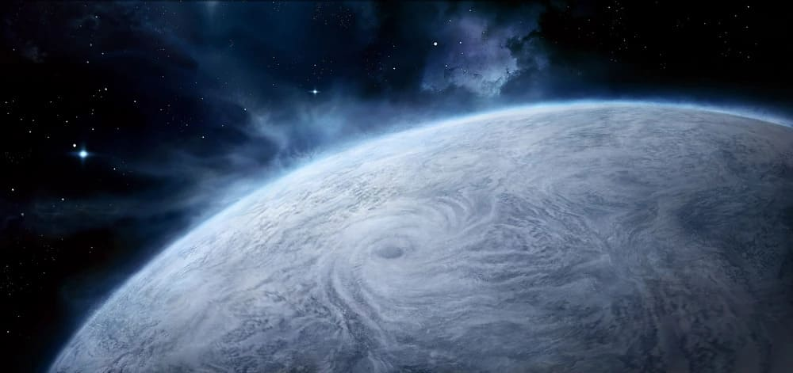
Mucho antes de que la humanidad llegara al espacio profundo, los habitantes alienígenas de Tau Volantis descubrieron otro Black Marker. A partir de ahí construyeron Markers rojos sobre la superficie del planeta con la idea de aprovechar su energía, pero el resultado fue una catástrofe. El Black Marker terminó provocando un evento de Convergencia y dando origen a una Brethren Moon. Para detenerlo, los alienígenas construyeron una Máquina capaz de congelar el planeta y frenar el proceso, aunque al final su civilización desapareció por completo. :contentReference[oaicite:3]{index=3}
Tau Volantis es importantísimo porque demuestra que el problema de los Marcadores no nació con la humanidad. Lo que le ocurre a Isaac, a la Ishimura y a las colonias humanas ya había pasado antes en una escala todavía más grande. La diferencia es que la humanidad vuelve a cometer el mismo error creyendo que puede controlar algo que no entiende. :contentReference[oaicite:4]{index=4}
2214 a 2314 – El descubrimiento de los Marcadores y el nacimiento de Unitology
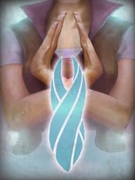
En el siglo 23, la humanidad ya había empezado a expandirse por el espacio debido al colapso ambiental y al agotamiento de recursos en la Tierra. En ese contexto, en 2214 se descubre el Black Marker en el cráter Chicxulub, cerca de México, y Michael Altman hace pública su existencia. Poco después, en 2215, Altman es asesinado y se convierte en mártir de la religión de la Iglesia de Unitology, que terminaría creciendo hasta convertirse en una de las fuerzas más poderosas de la humanidad espacial. :contentReference[oaicite:5]{index=5}
Décadas más tarde, entre 2294 y 2311, los investigadores del antiguo sistema humano logran replicar el Black Marker y crean los Red Markers. Esos experimentos se despliegan en distintos mundos colonizados y terminan provocando los primeros brotes serios de necromorfos. La humanidad cree estar encontrando una solución a sus crisis de energía, pero en realidad está abriendo la puerta a una plaga imposible de controlar. :contentReference[oaicite:6]{index=6}
Entre 2311 y 2314, las investigaciones llevan a Tau Volantis, donde se confirma que el riesgo ya es nivel extinción. La expedición termina con la ejecución de personal científico, la destrucción de datos, la activación del protocolo Scenario Five y el colapso de los Colonies, que finalmente da paso a EarthGov. Todo esto funciona como el gran prólogo político y científico de la tragedia que luego se vivirá en la era de Isaac Clarke. :contentReference[oaicite:7]{index=7}
2446 a 2507 – La era de la Ishimura y el avance de la explotación espacial
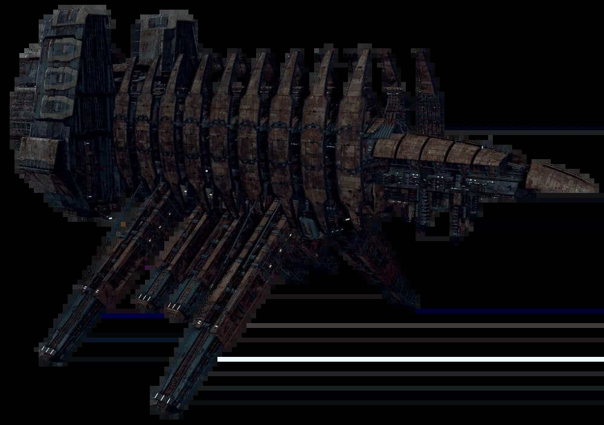
En 2446 se construye la USG Ishimura, el primer planeta-cracker de su clase y una de las naves más importantes de toda la saga. Esta nave simboliza el avance de la humanidad en el espacio, pero también la obsesión por extraer recursos sin importar el costo. Años después nacerán Isaac Clarke en 2461 y John Carver en 2477, dos nombres que serán claves en la tragedia futura. :contentReference[oaicite:8]{index=8}
Ya en 2505, la CEC entra de forma ilegal al Aegis Cluster y detecta que Aegis VII tiene minerales muy valiosos. En 2507 comienzan a preparar el planeta para el planet crack. Ese es el punto exacto donde el desastre empieza a ser inevitable. La humanidad otra vez cree que puede explotar un mundo más y volver a salir victoriosa, pero lo que encuentra en Aegis VII no es riqueza, sino infección. :contentReference[oaicite:9]{index=9}
2508 – El redescubrimiento del Marker 3A y el inicio de la pesadilla

En 2508, cinco semanas antes de los eventos de Dead Space, la CEC redescubre el Marker 3A en Aegis VII. Su existencia llega tanto a la dirección corporativa como a la Iglesia de Unitology, y la colonia empieza a mostrar insomnio, paranoia y demencia. Cuanto más tiempo pasa el Marker cerca de la gente, más evidente se vuelve que algo está destruyendo sus mentes desde dentro. :contentReference[oaicite:10]{index=10}
Luego viene la extracción del Marker de su pedestal, el suicidio masivo en Union Square, los primeros homicidios relacionados con alucinaciones y la llegada de la USG Ishimura. El plan de planet crack comienza, las comunicaciones se cortan y la colonia de Aegis VII cae en el caos. A partir de ahí, los necromorfos empiezan a propagarse por la colonia y por la nave hasta convertir todo en una carnicería. :contentReference[oaicite:11]{index=11}
Dead Space: Extraction – El horror visto desde Aegis VII e Ishimura
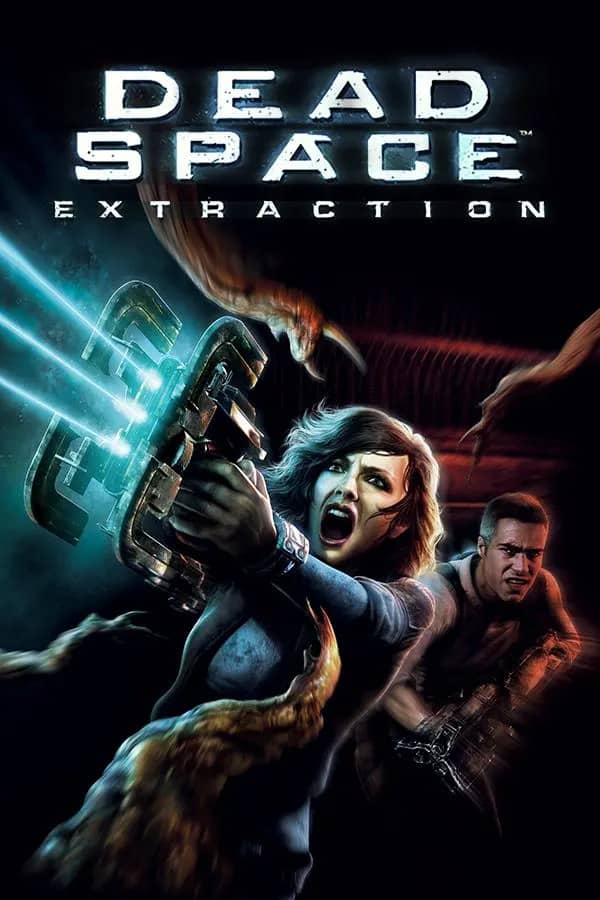
Dead Space: Extraction ocurre en 2508, antes de los eventos principales del primer juego, y sigue a Lexine Murdoch, Nathan McNeill, Gabe Weller y Warren Eckhardt mientras intentan sobrevivir al brote en Aegis VII y la USG Ishimura. La historia se entrelaza con la de Dead Space y muestra detalles que después hacen todavía más trágico el desastre. :contentReference[oaicite:12]{index=12}
Aquí el terror no viene solo de los necromorfos, sino también del derrumbe de la cordura. La situación en la colonia se vuelve cada vez peor, y los personajes descubren que la única forma de salir con vida es avanzar a través del horror, una decisión que en Dead Space casi nunca garantiza salvación real. :contentReference[oaicite:13]{index=13}
Esta parte de la cronología es clave porque funciona como puente directo hacia el primer juego y ayuda a entender cómo la infección ya estaba desatándose incluso antes de que Isaac llegara a Aegis VII. :contentReference[oaicite:14]{index=14}
Dead Space – La tragedia de la USG Ishimura
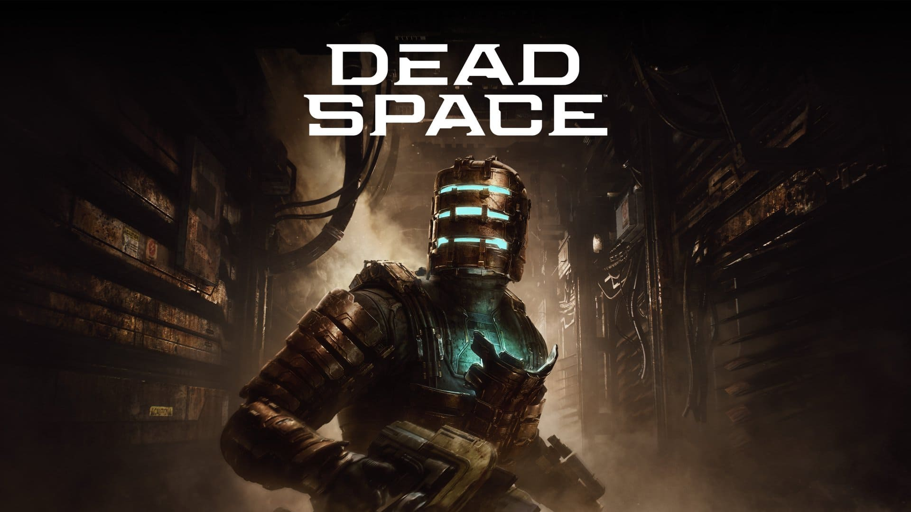
Después de los eventos ocurridos en Aegis VII y el colapso de la colonia minera, la USG Ishimura deja de responder completamente a las comunicaciones. La gigantesca nave planet-cracker, considerada una de las más avanzadas jamás creadas por la humanidad, se convierte en una tumba flotante perdida en el espacio profundo.
Para investigar lo sucedido, la nave de reparación USG Kellion es enviada al sistema. Entre los tripulantes se encuentra Isaac Clarke, un ingeniero especializado en sistemas y mantenimiento, acompañado por Kendra Daniels y Zach Hammond. Oficialmente, la misión consiste en reparar la Ishimura y descubrir por qué se perdió contacto con la nave, aunque Isaac también tiene una razón personal: encontrar a Nicole Brennan, su pareja, quien trabajaba como oficial médica a bordo.
Desde el momento en que el Kellion se aproxima, algo se siente extraño. La Ishimura permanece silenciosa, oscura y prácticamente sin señales de vida. Cuando intentan ingresar, la maniobra falla y el Kellion termina gravemente dañado, obligando al grupo a entrar directamente en la nave minera.
Apenas pisan el interior de la Ishimura, descubren que la situación es muchísimo peor de lo que imaginaban.
El comienzo de la pesadilla
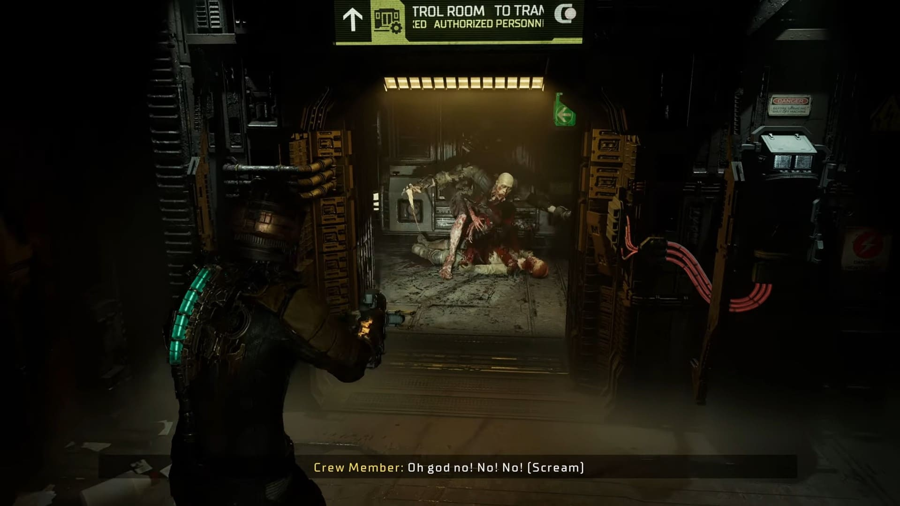
Los corredores de la Ishimura están cubiertos de sangre, cuerpos mutilados y señales de violencia extrema. La energía funciona de manera irregular, muchas áreas permanecen bloqueadas y el sistema de emergencia está completamente activado.
Poco después ocurre el primer ataque necromorfo. Las criaturas irrumpen violentamente en los pasillos y masacran a varios miembros de seguridad frente a Isaac. A diferencia de enemigos normales, estos monstruos no mueren fácilmente con disparos comunes. Isaac descubre rápidamente que la única manera efectiva de detenerlos es desmembrando sus extremidades.
Ese detalle se convierte en uno de los conceptos más icónicos de la saga: sobrevivir no depende de disparar mejor, sino de cortar brazos, piernas y partes del cuerpo para inutilizar a las criaturas.
A partir de ese momento, Isaac queda prácticamente solo dentro de una nave convertida en un infierno biológico.
Los Necromorfos
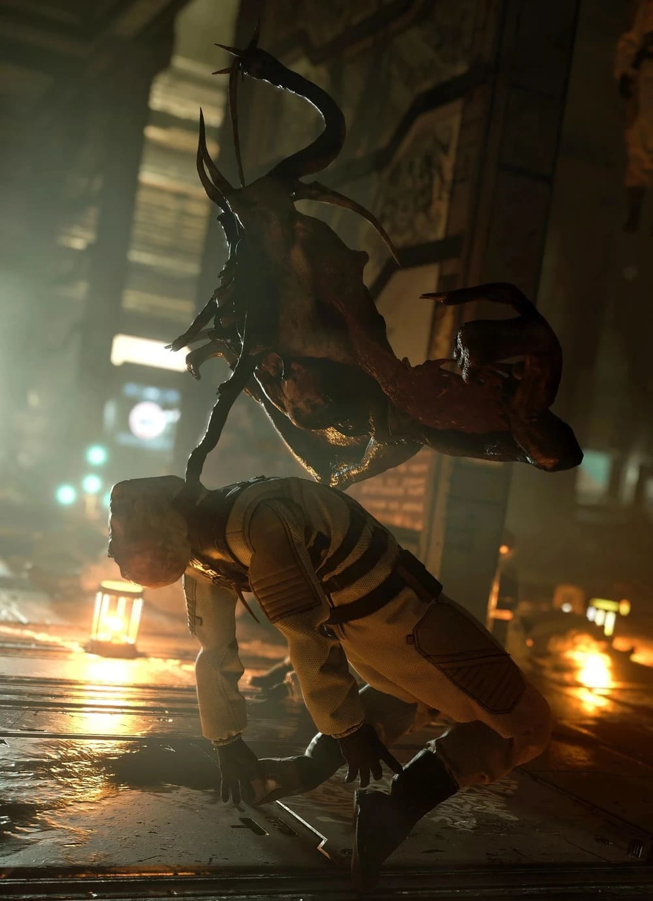
Los necromorfos son cadáveres reanimados y deformados por una infección alienígena relacionada con el Marker. Los cuerpos humanos son transformados en criaturas violentas, grotescas y extremadamente agresivas.
La infección no solo altera el cuerpo físico, sino también la mente de las personas cercanas al Marker. Muchos tripulantes comenzaron a sufrir paranoia, alucinaciones, tendencias suicidas y episodios de locura incluso antes de morir.
Lo aterrador de los necromorfos es que representan una corrupción total de la humanidad. Médicos, ingenieros, niños y civiles terminan convertidos en monstruos irreconocibles.
La Ishimura deja de ser una nave y pasa a sentirse como un organismo vivo lleno de carne, cadáveres y mutaciones imposibles.
La investigación de Isaac
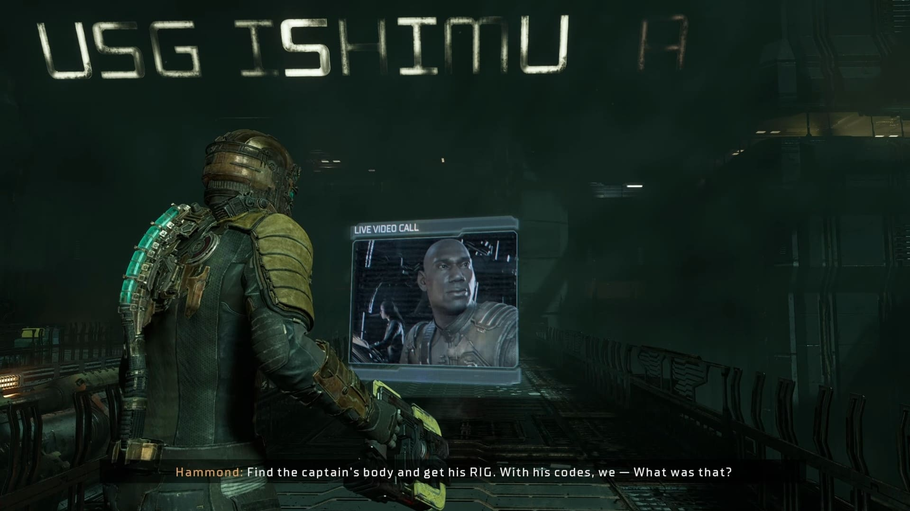
Mientras intenta restaurar sistemas críticos de la Ishimura, Isaac descubre fragmentos de audio y registros que revelan lentamente lo ocurrido. La tripulación encontró un artefacto alienígena conocido como Marker en Aegis VII y lo llevó a bordo.
Poco después comenzaron las alucinaciones, los suicidios y los primeros brotes necromorfos. La situación escaló tan rápido que la tripulación perdió completamente el control de la nave.
Isaac también empieza a experimentar visiones constantes de Nicole Brennan. Ella parece aparecer frente a él en distintos sectores de la Ishimura, guiándolo y hablándole como si todavía estuviera viva.
Sin embargo, cuanto más avanza la historia, más evidente se vuelve que el Marker está afectando la mente de Isaac igual que afectó a todos los demás.
La Iglesia de Unitology y la conspiración
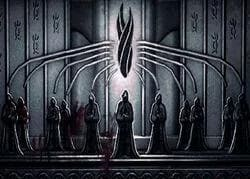
Isaac descubre que gran parte de la tragedia estuvo relacionada con Unitology, una religión extremadamente poderosa que considera a los Markers objetos sagrados.
Los Unitologists creen que los Markers representan el siguiente paso de la evolución humana y que eventualmente conducirán a un evento llamado Convergencia.
Muchos miembros de la Ishimura eran seguidores de Unitology, incluyendo altos oficiales de la nave. Eso permitió que el Marker permaneciera protegido incluso cuando la infección ya estaba destruyendo a toda la tripulación.
Con el tiempo queda claro que no se trató solamente de un accidente científico. Corporaciones, gobiernos y grupos religiosos ya conocían parte del peligro, pero aun así siguieron experimentando con los Markers por interés político, energético y religioso.
La verdad sobre Nicole Brennan
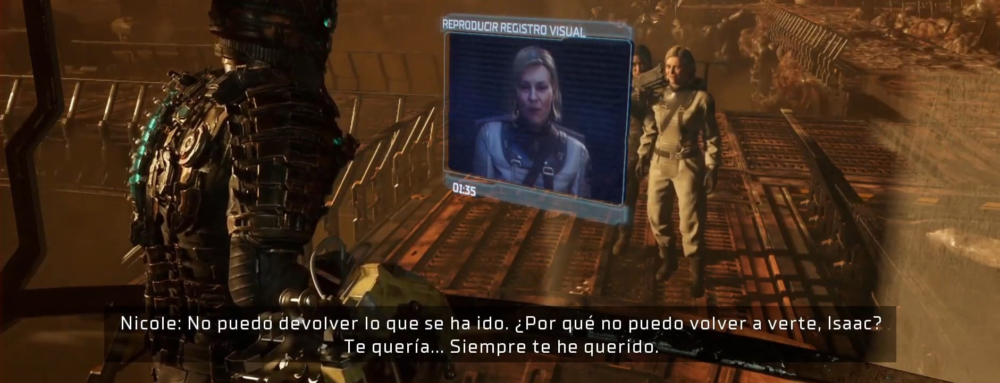
Uno de los momentos más devastadores del juego ocurre cuando Isaac finalmente descubre la verdad sobre Nicole.
Durante toda la historia, Isaac creyó que ella seguía viva y que estaba intentando ayudarlo desde distintos sectores de la nave. Pero en realidad Nicole había muerto mucho antes de la llegada del Kellion.
Las visiones eran alucinaciones provocadas por la influencia mental del Marker.
El descubrimiento destruye emocionalmente a Isaac. La única razón personal que lo mantenía luchando dentro de la Ishimura era una ilusión creada por el propio artefacto alienígena.
Ese momento define gran parte de la tragedia psicológica de la saga y marca el inicio del deterioro mental de Isaac Clarke.
El Hive Mind y la destrucción de Aegis VII
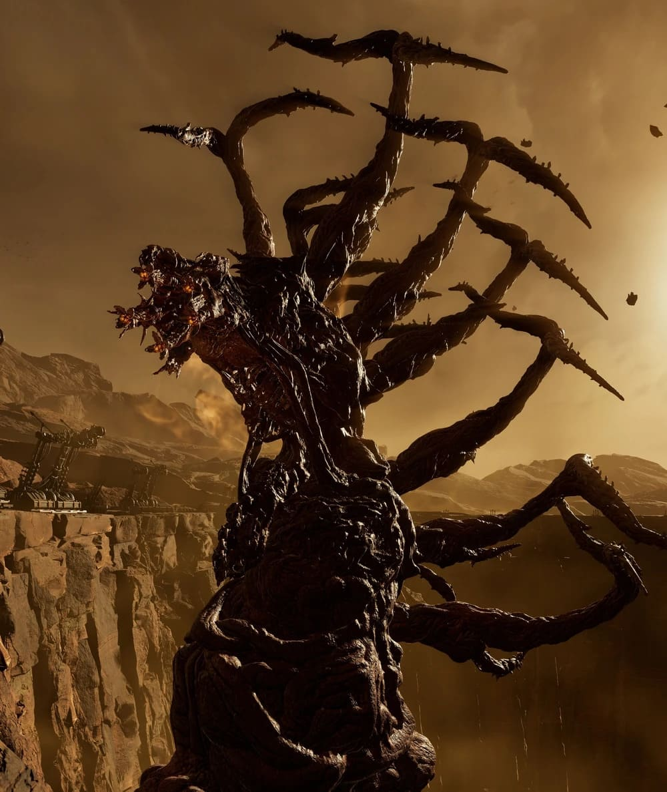
Hacia el final de la historia, Isaac descubre que la infección necromorfa está controlada por una gigantesca inteligencia colectiva conocida como Hive Mind.
La criatura controla enormes cantidades de biomasa y funciona como el núcleo principal de la infección en Aegis VII.
Después de múltiples enfrentamientos y de devolver el Marker a su pedestal original, Isaac lucha contra el Hive Mind en la superficie del planeta.
La batalla representa el último intento desesperado de detener la expansión necromorfa antes de que la infección alcance todavía más sistemas humanos.
Finalmente Isaac logra derrotar temporalmente a la criatura y escapar mientras Aegis VII colapsa por completo.
El final de Dead Space
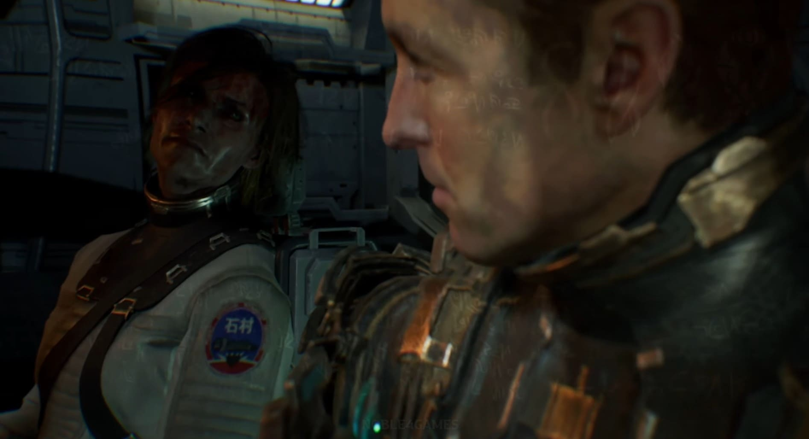
Isaac consigue escapar de la Ishimura completamente solo y profundamente traumatizado. La experiencia destruyó casi todo lo que conocía: perdió compañeros, descubrió la muerte de Nicole y quedó marcado psicológicamente por el contacto con el Marker.
Aunque aparentemente logra sobrevivir, el final deja claro que el horror todavía no terminó.
En los últimos segundos del juego, Isaac sufre una última alucinación relacionada con Nicole, insinuando que el Marker dejó secuelas permanentes en su mente.
Ese cierre establece perfectamente el tono de toda la saga: incluso cuando alguien logra escapar físicamente, el daño psicológico y la corrupción mental continúan mucho después.
Dead Space termina convirtiendo a Isaac Clarke no en un héroe tradicional, sino en un sobreviviente roto emocionalmente, perseguido por recuerdos, culpa y locura.
Dead Space Ignition – El comienzo del desastre en The Sprawl
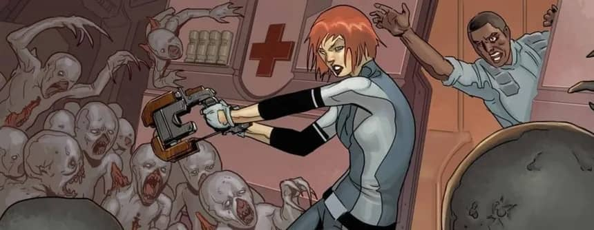
Después de la destrucción de la Ishimura y los eventos traumáticos vividos por Isaac Clarke, EarthGov y distintas corporaciones continúan investigando secretamente la tecnología de los Markers. Lejos de abandonar los experimentos, muchas organizaciones consideran que el poder de los artefactos podría resolver la crisis energética de la humanidad.
Esa obsesión termina provocando una nueva catástrofe en la gigantesca estación espacial conocida como The Sprawl, construida sobre una de las lunas de Saturno.
Dead Space Ignition funciona como prólogo directo de Dead Space 2 y muestra los primeros momentos del colapso dentro de la estación.
La historia sigue a Franco Delille y Sarah Andrade, dos técnicos que trabajan dentro de sistemas de seguridad y mantenimiento. Al principio todo parece relativamente normal, aunque comienzan a aparecer fallas eléctricas, interrupciones extrañas y comportamientos violentos entre distintos habitantes de la colonia.
Poco a poco descubren que algo terrible está ocurriendo en los niveles inferiores de The Sprawl. La infección necromorfa vuelve a propagarse y la estación comienza a perder el control de sus sistemas internos.
Mientras intentan escapar y enviar información crítica a las autoridades, Franco y Sarah quedan atrapados en medio del caos. Las comunicaciones fallan, sectores completos quedan aislados y los necromorfos empiezan a multiplicarse rápidamente dentro de la estación.
El juego muestra cómo el desastre empieza lentamente antes de transformarse en un brote masivo imposible de detener.
Dead Space Mobile – La caída de The Sprawl
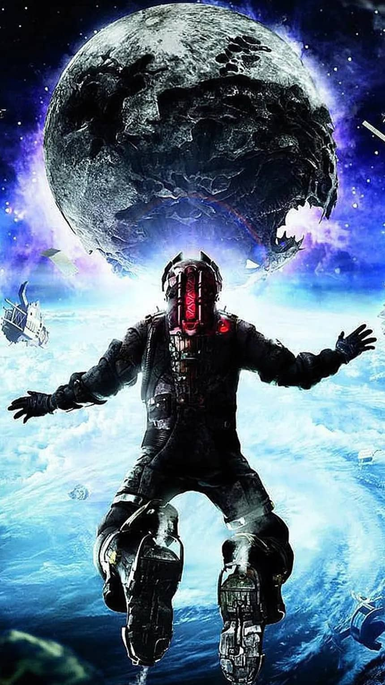
Mientras la infección se extiende por The Sprawl, otra historia ocurre paralelamente dentro de la estación. Dead Space Mobile sigue a Vandal, un agente encubierto enviado por Unitology para sabotear la colonia y preparar el terreno para un nuevo evento relacionado con los Markers.
Vandal es un personaje completamente diferente a Isaac Clarke. Mucho más frío y agresivo, trabaja inicialmente siguiendo órdenes de la Iglesia de Unitology, convencido de que la expansión de los Markers representa el futuro de la humanidad.
Sin embargo, a medida que la situación empeora y la infección necromorfa comienza a consumir sectores enteros de la estación, incluso él empieza a comprender que las fuerzas detrás de los Markers son muchísimo más peligrosas de lo que imaginaba.
The Sprawl lentamente se convierte en otra pesadilla espacial. Hospitales, áreas residenciales, laboratorios y sistemas de transporte colapsan mientras miles de personas mueren o son transformadas en necromorfos.
El juego muestra una visión más amplia del desastre, enseñando cómo la infección afecta distintos sectores civiles y militares de la estación.
También deja claro que EarthGov y Unitology continúan manipulando información sobre los Markers incluso después de la tragedia de la Ishimura.
Al final de la historia, Vandal logra sobrevivir temporalmente, pero The Sprawl ya está condenada. La infección sigue creciendo y el escenario queda preparado para el comienzo de Dead Space 2.
La importancia de The Sprawl

The Sprawl representa uno de los lugares más importantes de toda la saga Dead Space. A diferencia de la Ishimura, que era una nave relativamente aislada, The Sprawl es prácticamente una ciudad espacial completa con cientos de miles de habitantes.
Eso hace que el brote necromorfo sea muchísimo más peligroso. La infección ya no afecta solamente a una tripulación minera, sino a una colonia entera llena de civiles, hospitales, escuelas y centros de investigación.
La estación también simboliza la incapacidad de la humanidad para aprender de sus errores. A pesar de todo lo ocurrido en Aegis VII y la Ishimura, gobiernos y corporaciones continúan experimentando con tecnología relacionada a los Markers.
La obsesión por utilizar ese poder termina provocando otra masacre todavía mayor.
Toda esta situación desemboca directamente en Dead Space 2, donde Isaac Clarke despierta dentro de The Sprawl en medio de un nuevo brote necromorfo masivo.
Dead Space 2 – La pesadilla de Isaac Clarke en The Sprawl
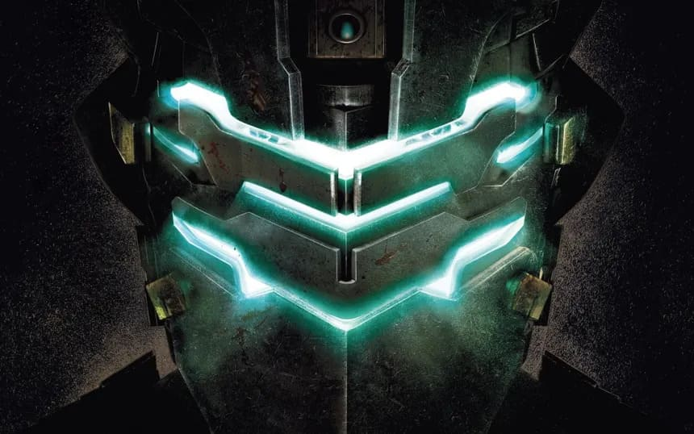
Dead Space 2 retoma la historia varios años después de la tragedia de la USG Ishimura. Isaac Clarke ya no es el ingeniero seguro de sí mismo que intentó sobrevivir al primer brote, sino un hombre destrozado por el trauma, la culpa y las secuelas mentales que dejó el contacto con el Marker. La historia comienza con él completamente desorientado dentro de un centro médico en la enorme estación espacial conocida como The Sprawl.
Desde el principio queda claro que Isaac no está bien. Tiene lagunas mentales, sufre alucinaciones constantes y apenas puede distinguir qué es real y qué es producto de su mente rota. Todo lo que vivió en la Ishimura lo persigue de forma brutal, y el juego utiliza esa fragilidad para construir una historia todavía más psicológica que la primera.
La estación The Sprawl, construida sobre la luna de Saturno, funciona como una ciudad espacial inmensa y mucho más viva que la Ishimura. Hay hospitales, zonas residenciales, laboratorios, sectores religiosos y áreas de seguridad. Precisamente por eso, cuando comienza el brote, la escala del desastre es muchísimo mayor. Ya no se trata de una nave aislada: ahora la amenaza afecta a miles de personas.
El despertar de Isaac
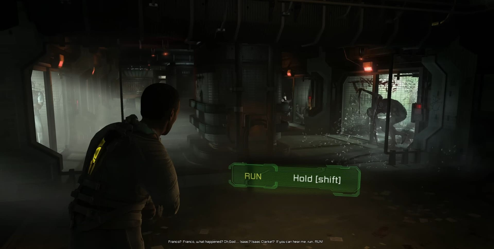
Isaac despierta en un hospital psiquiátrico sin entender cómo llegó ahí. Poco después descubre que está retenido y monitoreado por EarthGov debido a su conexión con los eventos de Aegis VII y la Ishimura. Ellos saben que Isaac tuvo contacto directo con el Marker y temen tanto lo que sabe como lo que puede hacer.
En este punto de la historia aparece una de las características más importantes de Dead Space 2: Isaac ya no lucha solamente contra monstruos físicos, sino también contra una manipulación mental cada vez más intensa. El Marker influye en sus recuerdos, lo tortura con visiones de Nicole y distorsiona su percepción del entorno.
Mientras intenta escapar, Isaac se encuentra con otras figuras clave de la historia, incluyendo al doctor Nolan Stross, otro superviviente profundamente afectado por el Marker. Stross funciona como una versión más extrema de Isaac: un hombre que ya perdió gran parte de la cordura y que entiende, de forma fragmentada, parte del terror que está ocurriendo.
Cuando comienza el brote en The Sprawl, el hospital se convierte en una zona de caos absoluto. Los pacientes, el personal médico y la seguridad quedan atrapados en medio de la infección necromorfa, obligando a Isaac a huir por los pasillos destrozados mientras todo se derrumba a su alrededor.
Ellie Langford y la supervivencia
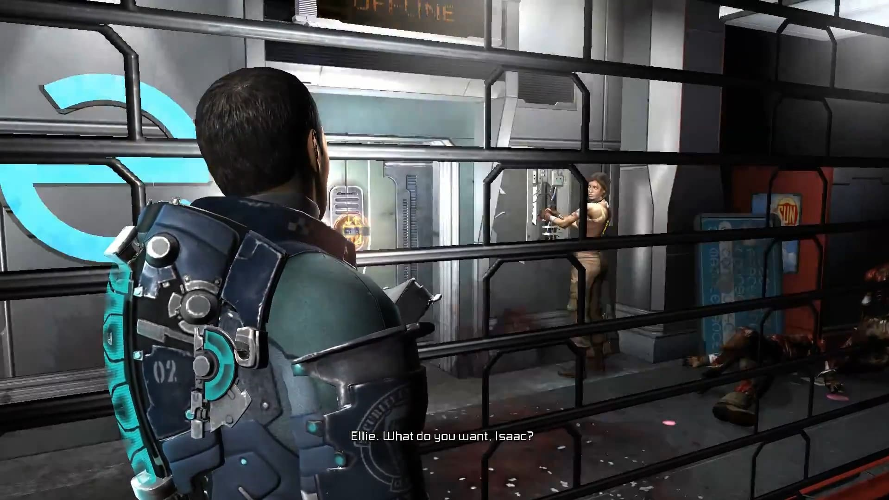
Uno de los personajes más importantes del juego es Ellie Langford, una técnica y piloto que sobrevive al desastre dentro de The Sprawl. Ellie se convierte en la principal aliada de Isaac y aporta una perspectiva distinta al horror: es fuerte, decidida y no se deja romper con la misma facilidad.
Su relación con Isaac se va construyendo en medio de la catástrofe. Ellie no lo trata como un héroe legendario, sino como un hombre agotado que todavía tiene la posibilidad de hacer lo correcto. Esa conexión emocional le da un peso humano enorme a la historia.
Ellie también representa la capacidad de resistir cuando todo alrededor parece perdido. Mientras otros personajes se hunden en la desesperación, ella sigue moviéndose, liderando y buscando una salida. Su presencia le da al juego una energía diferente, más ligada a la esperanza que al simple terror.
El regreso del Marker
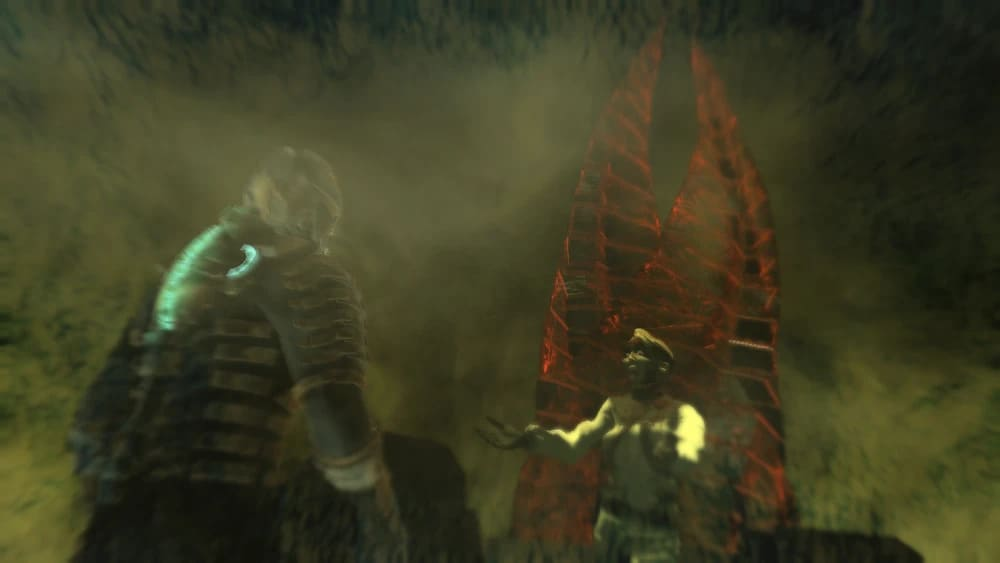
A lo largo de la historia, Isaac descubre que el Marker en The Sprawl no está actuando por accidente. EarthGov lo mantiene allí bajo control porque cree que puede aprovechar su tecnología, pero la situación se descontrola de nuevo cuando la influencia mental empieza a expandirse.
El Marker no solo genera visiones. También empuja a las personas hacia la violencia, la paranoia y la obsesión. Muchos habitantes de la estación comienzan a perder el juicio incluso antes de morir. Eso hace que el colapso no ocurra de golpe: primero se quiebra la mente, después el cuerpo.
En paralelo, Isaac sigue viendo a Nicole, pero cada vez queda más claro que no se trata de un recuerdo simple. La presencia de Nicole forma parte de una manipulación psicológica diseñada para guiarlo, confundirlo y mantenerlo cerca del Marker. Esa relación falsa es una de las partes más trágicas de toda la saga.
La gran diferencia con el primer juego es que acá Isaac ya empieza a comprender que el enemigo no solo está afuera. El verdadero horror también se instala dentro de su cabeza.
Unitology y el control de The Sprawl
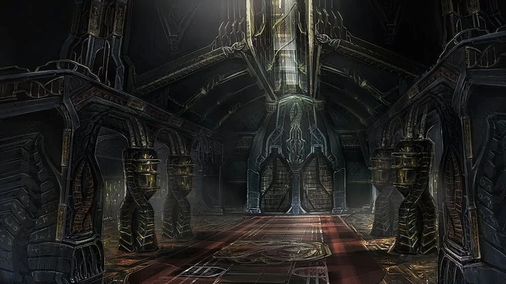
Al igual que en la primera entrega, la Iglesia de Unitology sigue teniendo un papel enorme en la tragedia. Su influencia política y social les permite ocultar información, manipular a la población y sostener experimentos relacionados con los Marcadores.
En Dead Space 2, Unitology no aparece solo como una religión, sino como una estructura de poder que está dispuesta a sacrificar vidas enteras con tal de acercarse al supuesto “futuro” que prometen los Markers. Su visión de la Convergencia convierte a la fe en una herramienta de control brutal.
La estación está llena de símbolos, fanáticos y gente manipulada por promesas de trascendencia. Esto hace que la amenaza sea todavía más peligrosa, porque la infección no se alimenta únicamente de cadáveres, sino también de creencias extremas.
El viaje a través de The Sprawl
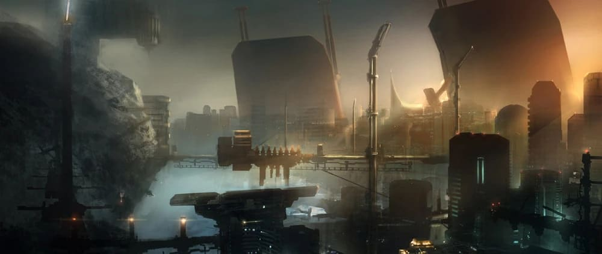
Isaac atraviesa sectores muy distintos dentro de The Sprawl mientras intenta sobrevivir y entender qué está pasando realmente. Recorre hospitales, zonas comerciales, túneles de mantenimiento, escuelas, sistemas de transporte y áreas de evacuación completamente destruidas.
La variedad de escenarios le da al juego una sensación de ciudad colapsada que funciona muy bien para el terror. Cada nuevo lugar muestra una faceta distinta del desastre: civiles atrapados, autoridades destruidas, pasillos cubiertos por restos humanos y sistemas automáticos fuera de control.
Esa estructura también refuerza la idea de que Dead Space no es solo una historia de monstruos, sino una historia sobre la descomposición total de una civilización que quiso usar algo que nunca debió tocar.
Stross, la manipulación mental y el miedo a recordar
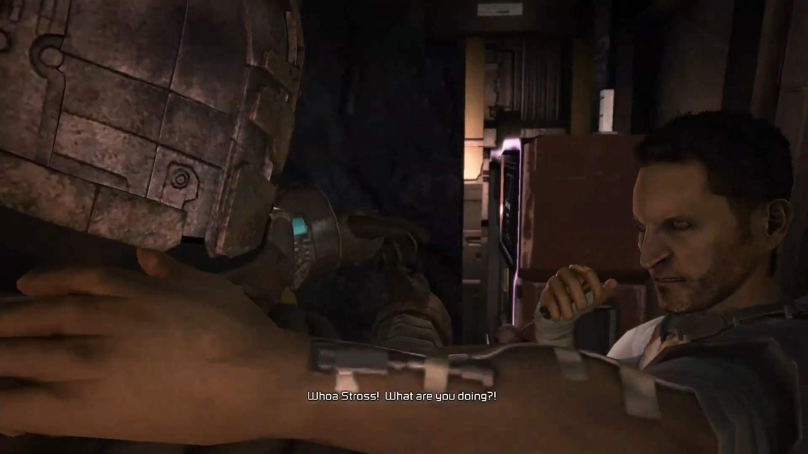
Nolan Stross es uno de los personajes más inquietantes del juego porque representa lo que puede pasar cuando alguien sobrevive demasiado tiempo al contacto con un Marker. Su mente está rota, fragmentada y llena de obsesiones imposibles de controlar.
Aunque a simple vista parece peligroso e impredecible, Stross también es una víctima. Está atrapado en una visión distorsionada de la realidad y cree estar siguiendo patrones que lo llevarán a comprender la verdad. Su comportamiento muestra una de las consecuencias más aterradoras del universo Dead Space: el conocimiento del Marker destruye antes de revelar.
Isaac y Stross funcionan como espejos opuestos. Uno todavía intenta entender lo que le pasa; el otro ya cayó completamente en la locura. Esa dualidad le da al juego un tono psicológico mucho más fuerte.
La USG Ishimura vuelve a ser parte del horror
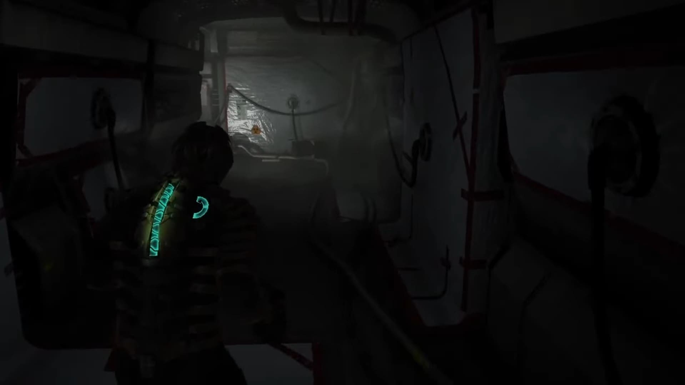
Uno de los momentos más potentes del juego ocurre cuando Isaac regresa a la USG Ishimura. La nave que destruyó su vida vuelve a aparecer, esta vez como un símbolo del trauma que aún no ha superado.
Volver a la Ishimura no es una simple visita: es una confrontación directa con la memoria, la culpa y el dolor. Cada corredor le recuerda a Isaac la pérdida de Nicole, sus compañeros muertos y la pesadilla que nunca dejó de perseguirlo.
La nave sigue siendo tan opresiva como antes, pero ahora tiene un peso emocional todavía mayor. Ya no es solo un escenario aterrador; es el lugar donde comenzó a romperse la mente de Isaac.
Los monstruos de Dead Space 2
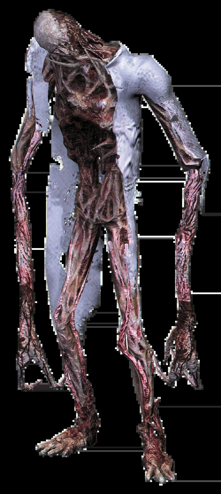
La variedad de necromorfos en Dead Space 2 es mayor y más peligrosa. El juego introduce nuevas formas de infección, nuevas variantes de combate y enemigos diseñados para hacer sentir que el brote evolucionó desde el primer juego.
Cada tipo de criatura representa una forma distinta de corrupción del cuerpo humano. Algunos están diseñados para el combate a distancia, otros para el ataque directo, y otros para emboscar a Isaac en espacios reducidos.
Eso hace que la supervivencia sea todavía más difícil. Isaac ya conoce las reglas básicas del terror necromorfo, pero la estación entera está diseñada para que incluso un superviviente experimentado siga sintiendo que no tiene control real sobre la situación.
El final de Dead Space 2
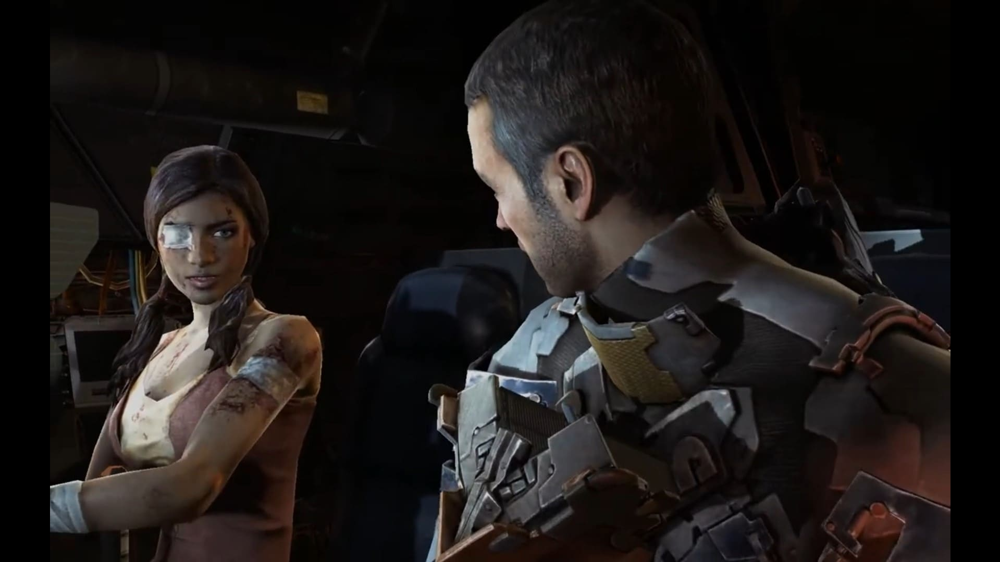
En el tramo final, Isaac descubre que la situación en The Sprawl está directamente ligada a los experimentos con el Marker y a una crisis mucho más grande de lo que parecía al principio. Las visiones, los mensajes y el colapso de la estación forman parte de un intento desesperado por activar un nuevo evento de Convergencia.
Isaac, Ellie y los pocos sobrevivientes que quedan se ven obligados a luchar por una salida mientras el brote se expande sin control. La estación termina completamente arruinada y el caos deja claro que nadie estaba preparado para manejar semejante amenaza.
El juego termina con Isaac sobreviviendo una vez más, aunque profundamente marcado. Aunque logra salir con vida, sigue atrapado por la influencia del Marker, por las alucinaciones y por el peso de todo lo que ha vivido.
El cierre refuerza una idea central de toda la saga: sobrevivir no significa salir intacto. En Dead Space, cada victoria deja cicatrices.
Conclusión de Dead Space 2
Dead Space 2 eleva la saga al convertir el terror espacial en una tragedia psicológica mucho más intensa. Ya no se trata solo de matar monstruos y reparar sistemas; ahora la historia explora el trauma, la culpa, la manipulación mental y el costo de seguir vivo después de haber visto lo imposible.
Isaac Clarke pasa de ser un ingeniero atrapado en una pesadilla a convertirse en un hombre emocionalmente fracturado que aún intenta avanzar. The Sprawl, Ellie, Stross, Unitology y el Marker amplían el universo de forma enorme y preparan el terreno para los últimos eventos de la saga.
Con este juego, Dead Space deja claro que su verdadero horror no está únicamente en los necromorfos, sino en la forma en que el conocimiento y la obsesión pueden destruir todo lo que tocan.
Dead Space 2: Severed – La historia de Gabe Weller y Lexine Murdoch
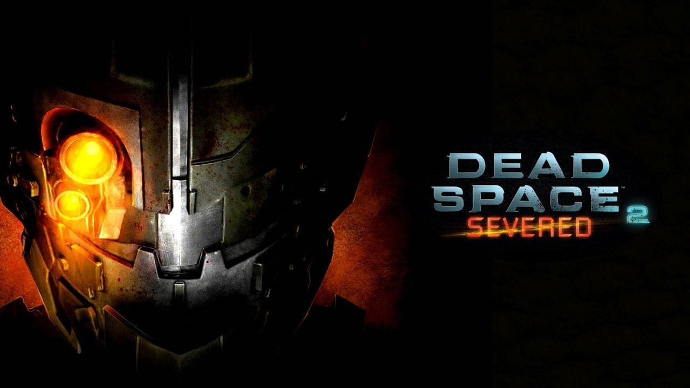
Mientras Isaac Clarke lucha por sobrevivir al brote necromorfo en The Sprawl, otra historia ocurre paralelamente dentro de la estación. Dead Space 2: Severed funciona como una continuación directa de Dead Space: Extraction y retoma la historia de Gabe Weller y Lexine Murdoch, dos supervivientes que lograron escapar de los eventos de Aegis VII y la Ishimura.
A diferencia de Isaac, Gabe no es un ingeniero. Es un soldado entrenado para operaciones de combate y seguridad, algo que cambia bastante el tono de esta historia. Su manera de enfrentar la infección es mucho más agresiva y militar, aunque eso no significa que esté preparado emocionalmente para lo que está ocurriendo.
La tragedia vuelve a alcanzarlos cuando el brote necromorfo comienza a expandirse por The Sprawl. Lo que parecía una nueva oportunidad para reconstruir sus vidas termina transformándose en otra pesadilla.
Lexine Murdoch y el interés de EarthGov
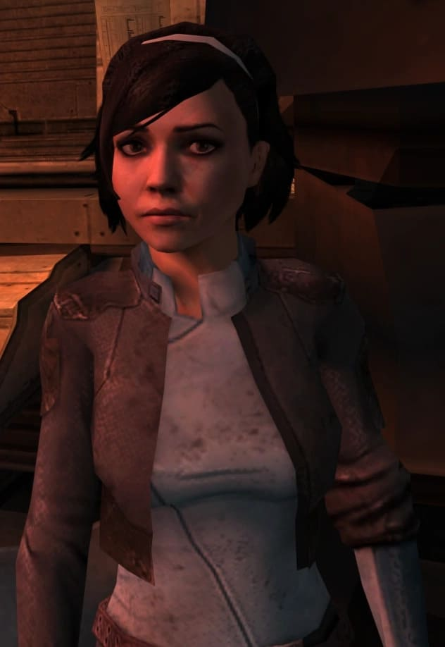
Lexine Murdoch es una de las personas más importantes del universo Dead Space debido a su extraña resistencia a la influencia mental del Marker. Desde los eventos de Extraction, distintos grupos comenzaron a sospechar que ella podría tener características únicas relacionadas con la infección y la manipulación psicológica.
Por esa razón, EarthGov la mantiene bajo vigilancia constante dentro de The Sprawl. Oficialmente se trata de protección, pero en realidad muchas organizaciones quieren utilizarla para comprender mejor el funcionamiento de los Markers.
Lexine representa algo extremadamente raro dentro de la saga: una persona que logra resistir parcialmente el deterioro mental provocado por la señal del Marker. Eso la convierte en un recurso valioso y peligroso al mismo tiempo.
Gabe, consciente de todo esto, intenta protegerla constantemente mientras la estación comienza a colapsar.
El nuevo brote necromorfo

Cuando la infección vuelve a expandirse por The Sprawl, Gabe y Lexine quedan atrapados en medio del caos exactamente igual que ocurrió años antes en la Ishimura. Los sistemas fallan, las comunicaciones colapsan y sectores completos de la estación quedan aislados por hordas de necromorfos.
La diferencia es que ahora el desastre es muchísimo mayor. The Sprawl alberga miles de habitantes, por lo que la infección se multiplica de forma mucho más rápida y brutal.
Gabe atraviesa hospitales destruidos, laboratorios abandonados y áreas de seguridad completamente arrasadas mientras intenta encontrar una ruta de escape para Lexine. La tensión principal de la historia gira alrededor de la desesperación por mantenerla viva mientras todo alrededor se desmorona.
Cada encuentro con los necromorfos refuerza una idea muy importante del universo Dead Space: la infección siempre termina alcanzando incluso a quienes lograron sobrevivir anteriormente.
Gabe Weller – Un soldado diferente a Isaac Clarke
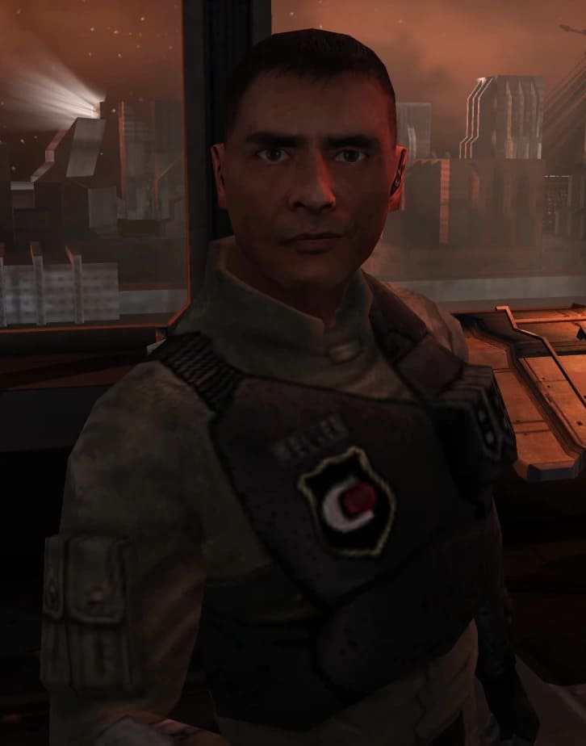
Gabe Weller funciona como un contraste interesante frente a Isaac Clarke. Mientras Isaac sobrevive utilizando herramientas de ingeniería y adaptándose constantemente, Gabe enfrenta el horror desde una perspectiva militar.
Sin embargo, eso no lo convierte en alguien invulnerable. A lo largo de la historia se nota cómo el estrés, la pérdida y el miedo empiezan a afectar también su estabilidad emocional.
La saga Dead Space constantemente deja claro que nadie sale completamente intacto de un brote necromorfo. Incluso los personajes más preparados terminan arrastrando cicatrices psicológicas enormes.
Gabe también destaca por su relación con Lexine. Gran parte de sus decisiones están motivadas por protegerla, lo que le da al DLC un enfoque más humano y emocional dentro de tanto horror.
La conexión con Dead Space 2

Los eventos de Severed ocurren paralelamente a la historia principal de Dead Space 2. Mientras Isaac intenta detener la crisis del Marker, Gabe y Lexine luchan simplemente por escapar vivos de la estación.
Eso hace que el DLC funcione muy bien como complemento del juego principal, porque muestra el desastre desde otra perspectiva. No todo gira alrededor de Isaac Clarke: miles de personas están intentando sobrevivir al mismo tiempo.
También amplía mucho la sensación de caos total dentro de The Sprawl. La estación se siente todavía más enorme y descontrolada cuando vemos cómo distintos grupos intentan huir simultáneamente.
La narrativa conecta perfectamente con el universo general de la saga y ayuda a reforzar la importancia de personajes secundarios que ya habían aparecido en Extraction.
El final de Severed
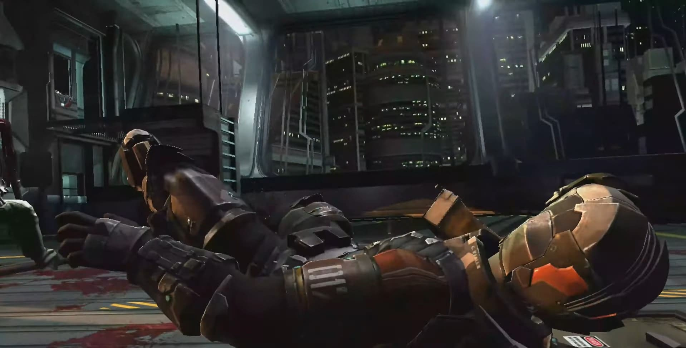
Tras atravesar múltiples sectores infestados y sobrevivir a incontables enfrentamientos, Gabe finalmente logra sacar a Lexine de The Sprawl antes del colapso definitivo de la estación.
Aunque consiguen escapar físicamente, el final deja claro que las consecuencias psicológicas seguirán persiguiéndolos. La experiencia en la Ishimura ya había dejado marcas profundas en ambos personajes, y los eventos de The Sprawl solo empeoran esa situación.
El DLC termina reforzando uno de los temas centrales de toda la saga: en Dead Space no existen verdaderos finales felices. Sobrevivir suele significar cargar para siempre con el trauma, la culpa y los recuerdos del horror vivido.
Dead Space 2: Severed amplía el universo de la saga mostrando cómo otras personas enfrentan el mismo apocalipsis necromorfo, aportando más profundidad a la caída de The Sprawl y conectando directamente Extraction con Dead Space 2.
Dead Space 3 – El origen de los Markers y el fin de la humanidad
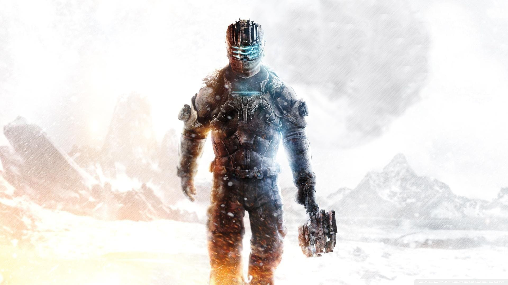
Después de los eventos de The Sprawl, Isaac Clarke intenta desaparecer completamente. Agotado física y mentalmente, vive escondido y aislado del resto del mundo, intentando olvidar todo lo relacionado con los Markers, los necromorfos y las tragedias que destruyeron su vida.
Sin embargo, el horror vuelve a alcanzarlo una vez más.
La humanidad atraviesa una crisis energética extrema y múltiples gobiernos continúan obsesionados con la tecnología de los Markers, ignorando todas las advertencias del pasado. Mientras tanto, la Iglesia de Unitology se vuelve todavía más poderosa y agresiva, expandiendo su influencia política y militar por distintos sistemas.
Isaac es encontrado por Ellie Langford y el sargento John Carver, quienes necesitan su ayuda desesperadamente. Ellie descubrió información relacionada con un planeta helado llamado Tau Volantis, un lugar aparentemente conectado con el origen de los Markers.
Por primera vez en la saga, la historia deja de centrarse únicamente en sobrevivir a un brote y pasa a investigar el verdadero origen de toda la pesadilla.
Isaac Clarke después de The Sprawl
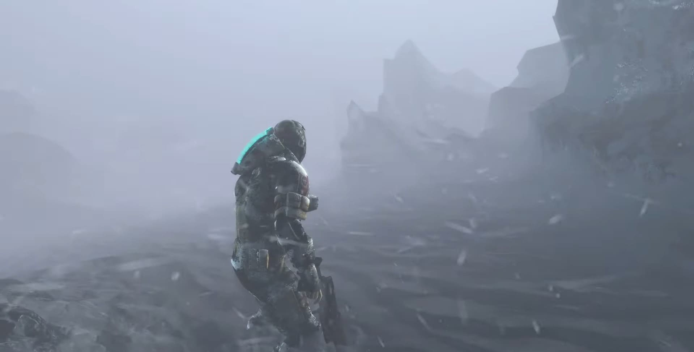
Isaac llega a Dead Space 3 completamente destruido emocionalmente. Ya no es simplemente un superviviente traumatizado; ahora es alguien que carga con años de culpa, violencia y manipulación mental.
Las secuelas psicológicas siguen presentes constantemente. Aunque logró escapar de la Ishimura y de The Sprawl, el Marker dejó cicatrices profundas en su mente. Isaac continúa sufriendo recuerdos traumáticos, paranoia y miedo permanente.
Además, el personaje se encuentra emocionalmente distante de Ellie, quien también cambió muchísimo después de sobrevivir al desastre de Dead Space 2.
La relación entre ambos es más fría y tensa, mostrando cómo el horror afectó incluso los vínculos personales más importantes.
Unitology y la guerra por los Markers

La Iglesia de Unitology alcanza un nivel de poder enorme durante los eventos de Dead Space 3. Ya no funciona solamente como una religión fanática: ahora actúa prácticamente como una fuerza militar organizada.
Su líder, Jacob Danik, cree que la humanidad debe aceptar el destino impuesto por los Markers y permitir el evento de Convergencia. Para Danik, el fin de la civilización humana no es una tragedia, sino una evolución inevitable.
El fanatismo de Unitology se vuelve todavía más peligroso porque muchas personas desesperadas comienzan a seguir sus ideales. La crisis energética y el miedo generalizado hacen que la religión gane todavía más influencia sobre la población.
Danik se convierte en uno de los enemigos más importantes de toda la saga porque representa la combinación perfecta entre fanatismo, manipulación y poder político.
Tau Volantis
La mayor parte de Dead Space 3 transcurre en Tau Volantis, un planeta congelado y devastado que esconde la verdad detrás de los Markers.
A diferencia de la Ishimura y The Sprawl, el terror acá no proviene únicamente de espacios cerrados. Tau Volantis introduce tormentas heladas, estructuras alienígenas gigantescas y restos de antiguas civilizaciones destruidas hace millones de años.
El planeta transmite constantemente una sensación de muerte absoluta. Todo parece enterrado bajo hielo eterno, como si el lugar entero hubiera sido congelado para ocultar algo monstruoso.
Isaac y su equipo descubren instalaciones abandonadas, cadáveres congelados y registros antiguos que lentamente revelan la verdad más aterradora de toda la saga.
Los alienígenas de Tau Volantis
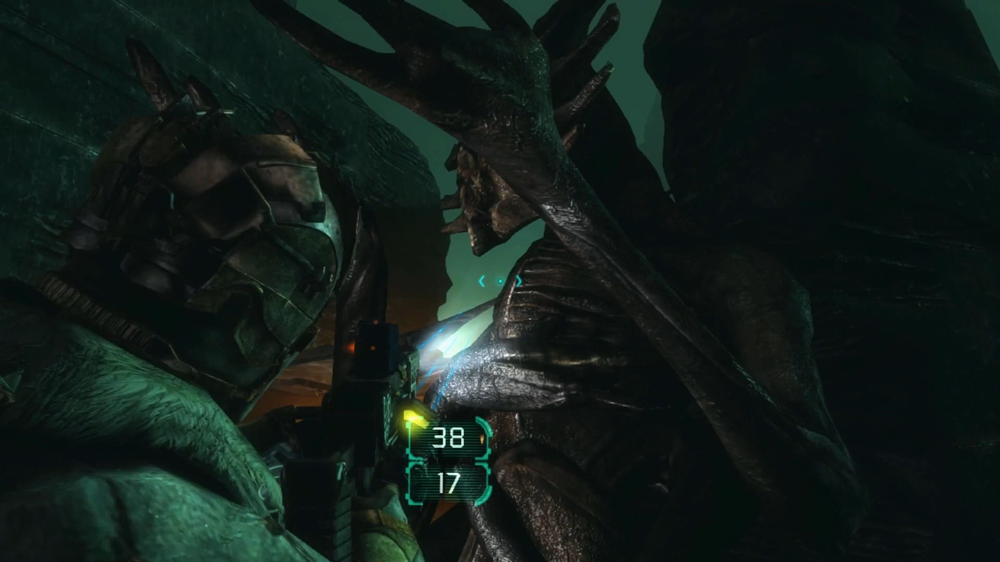
En Tau Volantis se revela que los Markers no fueron creados por humanos. Muchísimo tiempo antes de la existencia de la humanidad, otra civilización avanzada descubrió el poder de estos artefactos.
Sin embargo, esa especie terminó completamente destruida por la misma infección necromorfa que intentaron controlar.
Los registros encontrados por Isaac muestran que los alienígenas comprendieron demasiado tarde que los Markers no eran simples fuentes de energía, sino herramientas vinculadas a una inteligencia cósmica gigantesca.
Para evitar la destrucción total del universo, la antigua civilización decidió congelar Tau Volantis y sacrificar prácticamente todo su planeta con el objetivo de detener algo mucho peor que los necromorfos.
Ese descubrimiento cambia completamente la escala de la saga.
John Carver y la locura compartida
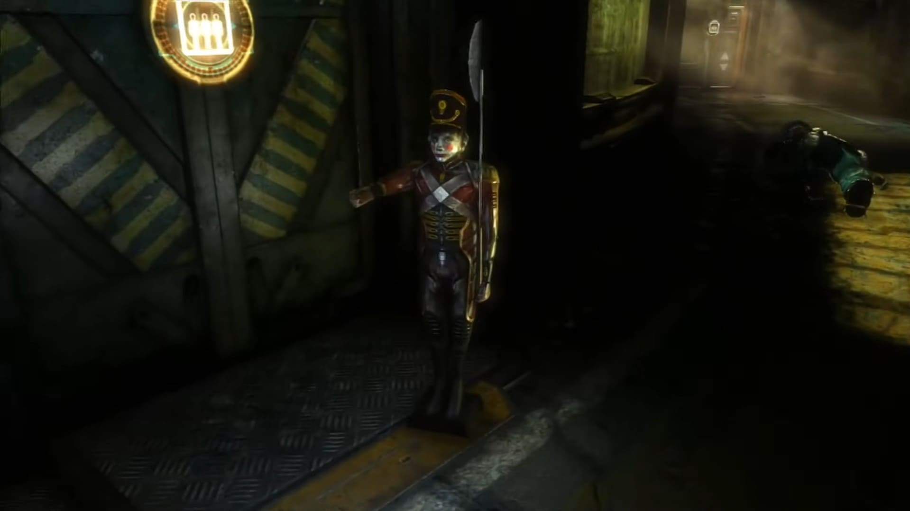
John Carver es uno de los personajes principales de Dead Space 3 y un soldado profundamente afectado por la tragedia personal causada por los Markers.
A diferencia de Isaac, Carver perdió directamente a su familia debido a la expansión de Unitology y la infección necromorfa. Eso lo convierte en alguien mucho más impulsivo, agresivo y emocionalmente inestable.
La relación entre Isaac y Carver es complicada porque ambos están destruidos psicológicamente, aunque reaccionan de maneras distintas frente al trauma.
En el modo cooperativo del juego, Dead Space 3 explora además las alucinaciones individuales de Carver, mostrando cómo el Marker afecta de forma diferente a cada persona.
Eso amplía todavía más la idea de que el verdadero horror de la saga está ligado tanto a la mente como al cuerpo.
La verdad sobre la Convergencia
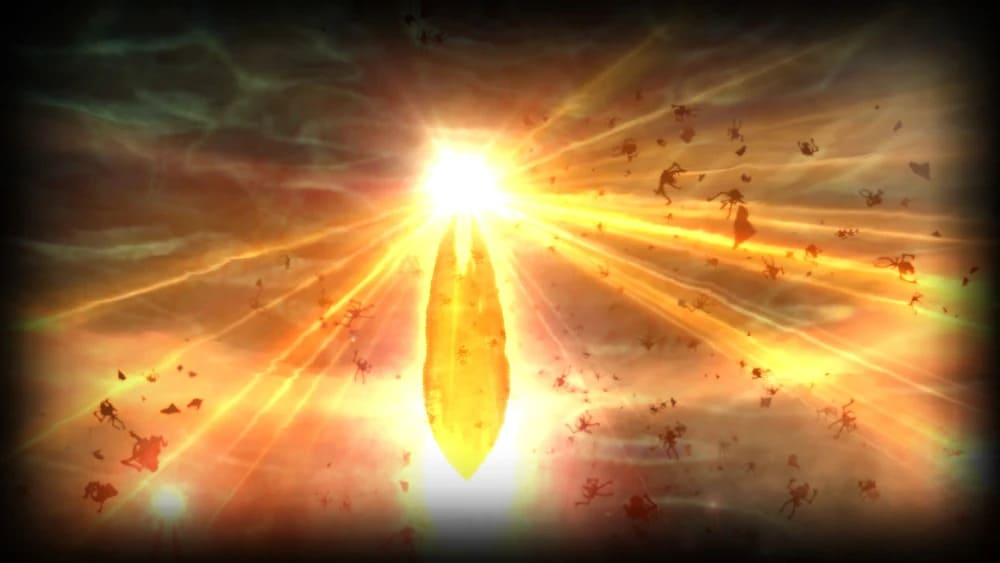
Finalmente Isaac descubre el verdadero propósito de los Markers y el significado de la Convergencia.
Los necromorfos no son simplemente criaturas creadas al azar. Toda la infección existe para acumular biomasa y alimentar la creación de entidades gigantescas conocidas como Brethren Moons.
Las Brethren Moons son organismos cósmicos colosales formados a partir de civilizaciones enteras absorbidas por los Markers. Cada planeta consumido termina convertido en una nueva luna viviente.
Ese descubrimiento transforma Dead Space de una historia de terror espacial a una auténtica pesadilla cósmica.
La humanidad deja de parecer importante frente a una amenaza universal que existe desde muchísimo antes de la civilización humana.
El enfrentamiento final
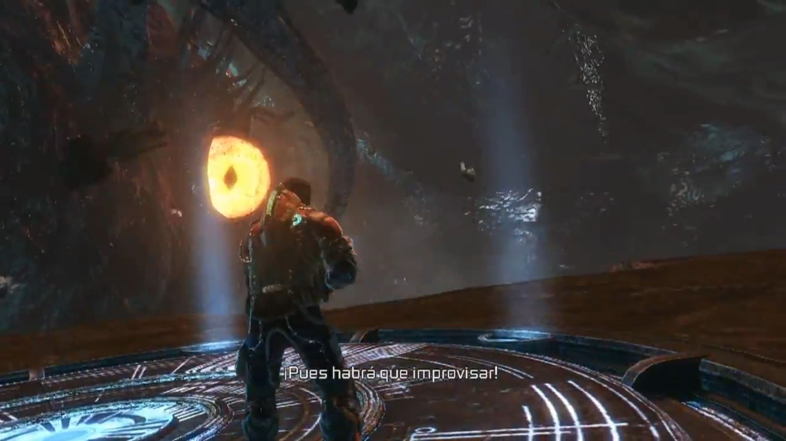
Isaac, Ellie y Carver descubren que Tau Volantis fue congelado para impedir el despertar de una Brethren Moon gigantesca oculta bajo el planeta.
Para detener la Convergencia, Isaac debe destruir el mecanismo alienígena que mantiene parcialmente contenida a la criatura.
La batalla final representa el intento desesperado de evitar que la humanidad sufra el mismo destino que otras civilizaciones anteriores.
Después de atravesar estructuras alienígenas imposibles y enfrentarse a horrores cada vez más extremos, Isaac logra detener temporalmente el proceso, aparentemente sacrificándose para salvar a los demás.
Sin embargo, el universo Dead Space nunca permite una victoria completa.
El final de Dead Space 3
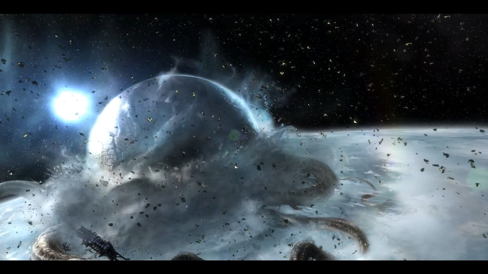
El final principal parece cerrar la historia con Isaac sobreviviendo junto a Carver y logrando escapar de Tau Volantis. Durante un breve momento existe la sensación de que finalmente consiguieron detener la amenaza.
Pero la escena post-créditos destruye rápidamente esa esperanza.
Al regresar cerca de la Tierra, Isaac descubre múltiples Brethren Moons aproximándose al planeta. La humanidad finalmente quedó expuesta frente a la verdadera magnitud del horror cósmico.
Ese cierre convierte a Dead Space 3 en el punto donde la saga deja completamente atrás el terror aislado y pasa a mostrar una amenaza universal prácticamente imposible de detener.
Isaac Clarke termina una vez más atrapado frente a algo mucho más grande que él, enfrentando no solo monstruos, sino el posible final de toda la especie humana.
Conclusión de Dead Space 3
Dead Space 3 amplía enormemente el universo de la saga al revelar el origen de los Markers, la verdad sobre la Convergencia y la existencia de las Brethren Moons.
La historia transforma el terror espacial en horror cósmico, mostrando que la humanidad apenas comprende una fracción de las fuerzas que intenta controlar.
Isaac Clarke completa su evolución como personaje pasando de simple ingeniero a figura central en la lucha contra una amenaza universal. Sin embargo, incluso después de todo lo que vivió, sigue siendo una persona rota emocionalmente, marcada por el trauma y perseguida por la locura.
Dead Space 3 cierra gran parte de la historia principal mientras deja abierta la posibilidad de que el verdadero horror apenas esté comenzando.
Dead Space 3: Awakened – El descenso definitivo hacia la locura
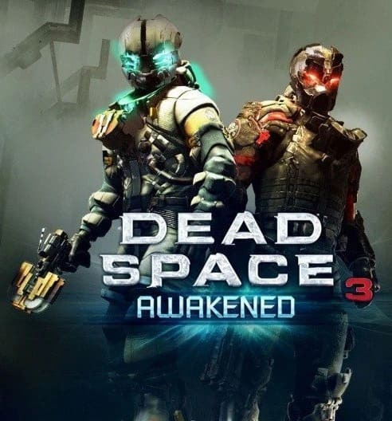
Dead Space 3: Awakened funciona como la verdadera conclusión de la saga principal y retoma la historia inmediatamente después del final de Dead Space 3.
Aunque Isaac Clarke y John Carver lograron escapar de Tau Volantis, la amenaza de las Brethren Moons no terminó. De hecho, recién empieza a mostrar su verdadero alcance.
El DLC abandona gran parte de la acción militar del juego base y vuelve a enfocarse en el horror psicológico, las alucinaciones y la destrucción mental de los protagonistas.
Desde el inicio queda claro que algo está profundamente mal. Isaac y Carver regresan a bordo de una nave en dirección a la Tierra, pero las visiones provocadas por los Markers comienzan a intensificarse muchísimo más que antes.
La línea entre realidad y locura prácticamente desaparece.
La influencia de las Brethren Moons
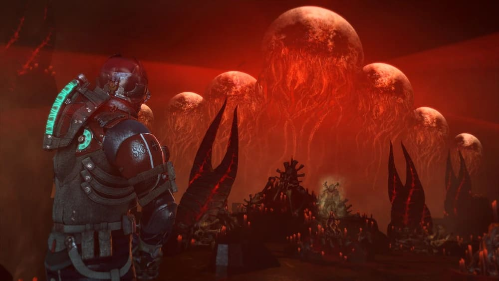
Después de los descubrimientos realizados en Tau Volantis, Isaac finalmente comprende que los necromorfos siempre fueron apenas una pequeña parte del verdadero horror.
Las Brethren Moons representan inteligencias cósmicas gigantescas capaces de influir mentalmente sobre especies enteras. Su presencia afecta directamente la percepción, los recuerdos y la estabilidad emocional de cualquier persona cercana a la señal de los Markers.
En Awakened, esa manipulación alcanza niveles extremos. Isaac y Carver ya no pueden confiar ni siquiera en lo que ven frente a ellos.
Ambos comienzan a sufrir episodios constantes de paranoia, alucinaciones violentas y cambios repentinos de percepción. Algunas escenas muestran enemigos inexistentes, cadáveres que parecen hablar y entornos que cambian de forma perturbadora.
El DLC transmite la sensación de que las Brethren Moons están intentando destruir lentamente la mente de Isaac antes incluso de atacar físicamente.
Isaac Clarke al borde del colapso

A lo largo de toda la saga, Isaac logró mantenerse parcialmente cuerdo pese a las experiencias traumáticas vividas en la Ishimura, The Sprawl y Tau Volantis.
Sin embargo, en Awakened finalmente parece acercarse a su límite definitivo.
Las visiones relacionadas con Nicole regresan de forma todavía más agresiva, mezclándose con imágenes de necromorfos, recuerdos distorsionados y mensajes imposibles de interpretar.
Isaac ya no sabe si realmente está avanzando hacia la Tierra o si todo lo que vive forma parte de una manipulación creada por las Brethren Moons.
El personaje entra en un estado psicológico extremadamente frágil. La culpa, el cansancio y el trauma acumulado durante años terminan explotando al mismo tiempo.
El DLC refuerza una idea central del universo Dead Space: nadie puede enfrentarse demasiado tiempo a los Markers sin perder una parte de sí mismo.
John Carver y las visiones compartidas

John Carver también comienza a deteriorarse rápidamente. Sus traumas relacionados con la pérdida de su familia se mezclan con las señales mentales emitidas por las Brethren Moons.
Muchas de las alucinaciones de Carver están ligadas directamente a su culpa personal y a la desesperación por no haber podido salvar a quienes amaba.
El DLC juega constantemente con la idea de que Isaac y Carver podrían estar viendo cosas completamente distintas aun estando en el mismo lugar.
Eso crea una atmósfera mucho más perturbadora que la del juego principal. El horror ya no proviene solamente de los necromorfos, sino de la imposibilidad de distinguir qué es real.
Incluso los diálogos entre ambos personajes empiezan a transmitir desconfianza y agotamiento emocional.
Unitology sigue expandiéndose

A pesar de todas las tragedias ocurridas, los fanáticos de Unitology continúan intentando acelerar la llegada de la Convergencia.
Muchos seguidores consideran a Isaac Clarke una figura casi legendaria debido a su conexión constante con los Markers. Algunos lo ven como una amenaza; otros como alguien elegido por las propias fuerzas detrás de la Convergencia.
La presencia de Unitology demuestra nuevamente que el horror de Dead Space no se basa únicamente en criaturas monstruosas, sino también en la obsesión humana por alcanzar un supuesto poder superior.
La manipulación religiosa sigue siendo una de las herramientas más destructivas dentro del universo de la saga.
El regreso a la Tierra

Finalmente Isaac y Carver consiguen regresar cerca de la Tierra, esperando advertir a la humanidad sobre la llegada de las Brethren Moons.
Pero lo que encuentran es muchísimo peor de lo imaginado.
La Tierra ya está siendo atacada.
Las Brethren Moons alcanzaron el sistema solar y comenzaron el proceso de destrucción masiva. El planeta aparece rodeado por enormes entidades cósmicas mientras múltiples sectores colapsan bajo el caos y la infección.
La humanidad prácticamente no tiene posibilidades reales de defenderse frente a una amenaza de semejante magnitud.
El final transmite una sensación absoluta de desesperanza: después de todos los sacrificios, todas las muertes y todas las batallas, el verdadero horror finalmente llegó al corazón de la civilización humana.
El final de Awakened
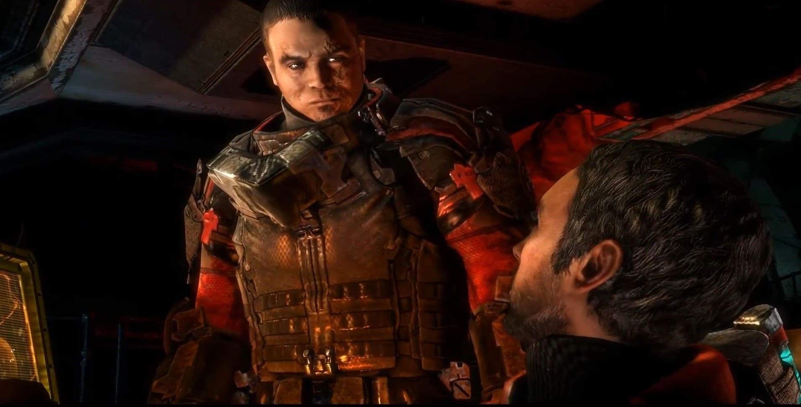
El DLC termina de forma ambigua y extremadamente oscura.
Isaac parece completamente quebrado psicológicamente mientras observa el ataque de las Brethren Moons sobre la Tierra. Algunas interpretaciones sugieren incluso que ya no puede distinguir entre realidad y alucinación.
La saga deja abierta la posibilidad de que la humanidad esté condenada inevitablemente.
A diferencia de muchos finales tradicionales, Awakened no ofrece una victoria clara ni esperanza definitiva. El cierre mantiene intacta la esencia del horror cósmico que Dead Space fue construyendo progresivamente desde el primer juego.
El universo entero parece diminuto e indefenso frente a entidades que existen desde mucho antes que la civilización humana.
Conclusión de Dead Space
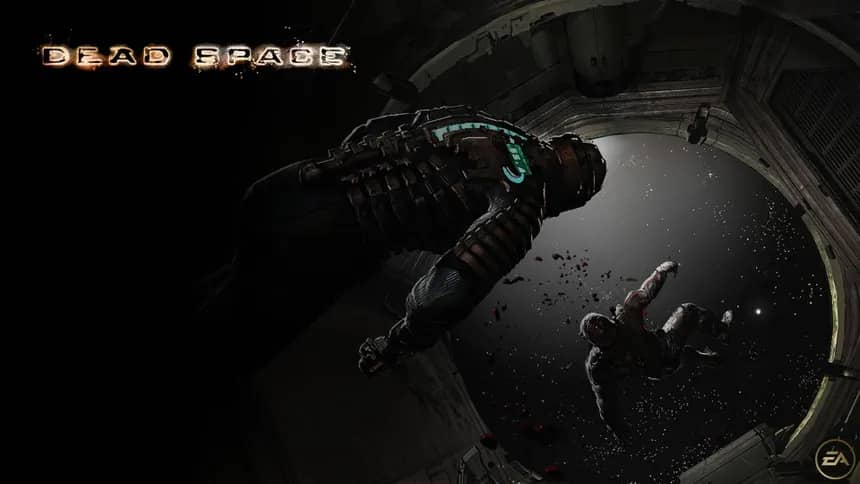
La saga Dead Space comienza como una historia de supervivencia espacial y termina convirtiéndose en una pesadilla cósmica sobre la destrucción de la mente, la obsesión humana y el miedo a lo desconocido.
A lo largo de los juegos vemos la evolución de Isaac Clarke desde un simple ingeniero atrapado en una nave infestada hasta convertirse en la única persona capaz de comprender parcialmente el verdadero origen de los Markers.
Los necromorfos representan el horror físico, pero las Brethren Moons representan algo todavía peor: la idea de que la humanidad jamás tuvo control real sobre las fuerzas que intentó utilizar.
La franquicia mezcla terror psicológico, ciencia ficción, conspiraciones religiosas y horror cósmico de una manera única, construyendo uno de los universos más oscuros e inquietantes de los videojuegos.
Incluso años después de su lanzamiento, Dead Space sigue siendo recordado como una de las sagas de terror más importantes de la industria gracias a su atmósfera opresiva, su narrativa trágica y el viaje inolvidable de Isaac Clarke.
Isaac Clarke
Isaac Clarke es el protagonista principal de la saga Dead Space y uno de los personajes más importantes del terror en los videojuegos. Antes de los eventos de la Ishimura era simplemente un ingeniero de sistemas especializado en reparación de naves espaciales.
A diferencia de muchos protagonistas militares, Isaac no estaba preparado para combatir monstruos ni sobrevivir a una masacre espacial. Precisamente eso hace que su evolución sea tan importante: pasa de ser un técnico común a convertirse en el principal superviviente de la amenaza necromorfa.
Durante los eventos de la Ishimura pierde prácticamente todo. La muerte de Nicole, el contacto con el Marker y las experiencias traumáticas terminan destruyendo lentamente su estabilidad mental.
En Dead Space 2 y Dead Space 3 vemos a un Isaac mucho más cansado, paranoico y emocionalmente roto. Aun así, continúa luchando incluso cuando comprende que la amenaza es muchísimo más grande que la humanidad.
Isaac representa la resistencia humana frente a un horror imposible de comprender.
Nicole Brennan
Nicole Brennan era médica a bordo de la USG Ishimura y pareja de Isaac Clarke. Su desaparición es el principal motivo por el que Isaac viaja hacia la nave al inicio del primer juego.
Sin embargo, Nicole ya había muerto antes de la llegada de Isaac. La figura que lo acompaña durante gran parte de la historia es en realidad una manipulación creada por el Marker.
Nicole se convierte en el símbolo más importante del trauma psicológico de Isaac. Sus apariciones constantes reflejan la culpa, el dolor y la incapacidad del protagonista para aceptar la realidad.
Incluso después de la destrucción de la Ishimura, las visiones relacionadas con Nicole continúan persiguiendo a Isaac durante años.
Ellie Langford
Ellie Langford aparece por primera vez en Dead Space 2 y rápidamente se convierte en uno de los personajes más importantes de la saga.
Es una piloto y técnica extremadamente inteligente que logra sobrevivir al brote de The Sprawl gracias a su capacidad para adaptarse rápidamente a situaciones extremas.
A diferencia de muchos personajes secundarios, Ellie nunca depende completamente de Isaac. Constantemente toma decisiones propias y demuestra ser capaz de sobrevivir incluso sin ayuda.
Su relación con Isaac evoluciona lentamente mientras ambos intentan lidiar con el trauma provocado por los Markers.
En Dead Space 3 se vuelve todavía más importante debido a su investigación sobre Tau Volantis y el origen de los Markers.
John Carver
John Carver es un sargento militar que aparece en Dead Space 3. Perdió a su familia debido a la expansión de Unitology y al caos generado por los Markers.
Ese trauma lo convierte en una persona mucho más agresiva e impulsiva que Isaac.
Carver representa otra perspectiva del horror psicológico de la saga. Mientras Isaac intenta racionalizar lo ocurrido, Carver reacciona constantemente desde el dolor y la culpa.
Las alucinaciones provocadas por los Markers afectan profundamente su mente, especialmente en Dead Space 3: Awakened.
Gabe Weller
Gabe Weller es un soldado protagonista de Dead Space Extraction y Dead Space 2: Severed.
A diferencia de Isaac, Gabe posee entrenamiento militar y experiencia en combate, pero eso no impide que el horror necromorfo termine afectándolo emocionalmente.
Gran parte de su historia gira alrededor de proteger a Lexine Murdoch mientras ambos intentan escapar de distintas tragedias relacionadas con los Markers.
Lexine Murdoch
Lexine Murdoch es una de las supervivientes de Aegis VII y posee una resistencia mental muy extraña frente a la influencia del Marker.
Debido a esa característica, EarthGov y otras organizaciones muestran gran interés en estudiarla.
Su supervivencia constante la convierte en una figura extremadamente importante dentro del universo Dead Space.
Nolan Stross
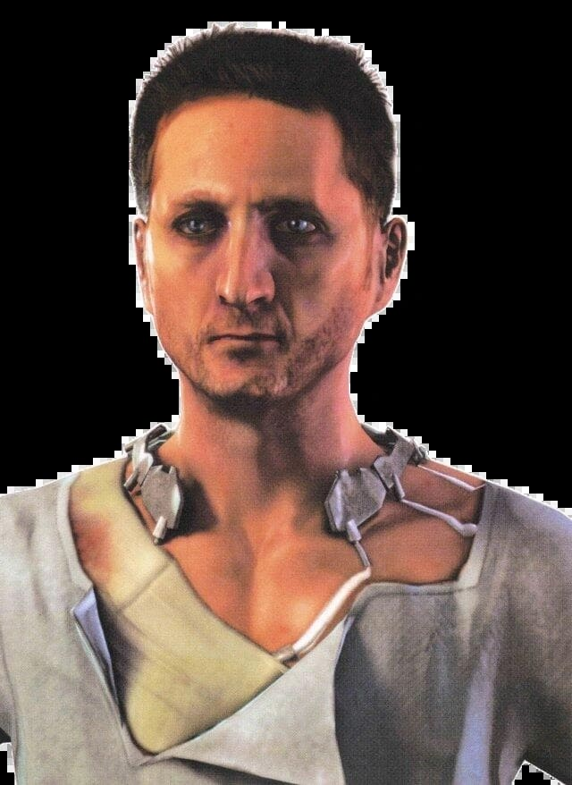
Nolan Stross es uno de los personajes más perturbadores de Dead Space 2.
Después de entrar en contacto con el Marker, su mente comienza a deteriorarse progresivamente hasta perder casi por completo la cordura.
Stross funciona como una advertencia sobre lo que puede ocurrirle a Isaac si continúa expuesto demasiado tiempo a la señal de los Markers.
Aunque a veces intenta ayudar, su locura termina convirtiéndolo en una amenaza.
Jacob Danik
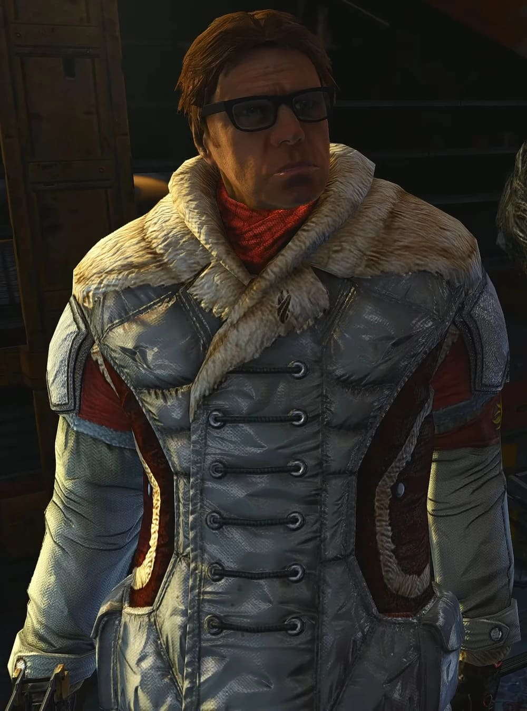
Jacob Danik es el principal antagonista humano de Dead Space 3 y líder fanático de Unitology.
Cree que la Convergencia representa la evolución definitiva de la humanidad y está dispuesto a sacrificar civilizaciones enteras para permitirla.
Danik representa el lado más extremo del fanatismo religioso dentro de la saga.
Dr. Challus Mercer
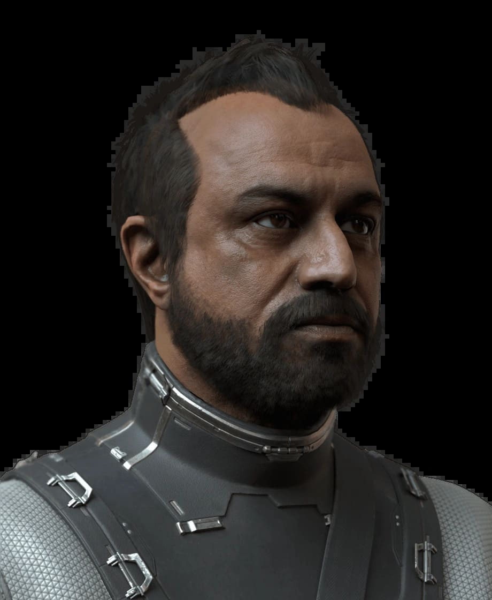
Mercer es uno de los personajes más peligrosos de la Ishimura.
Como científico y fanático de Unitology, considera a los necromorfos una forma superior de existencia.
Realiza experimentos brutales con humanos infectados y provoca múltiples muertes dentro de la nave.
Es uno de los primeros ejemplos claros de cómo el fanatismo puede ser tan peligroso como los propios monstruos.
Captain Benjamin Mathius
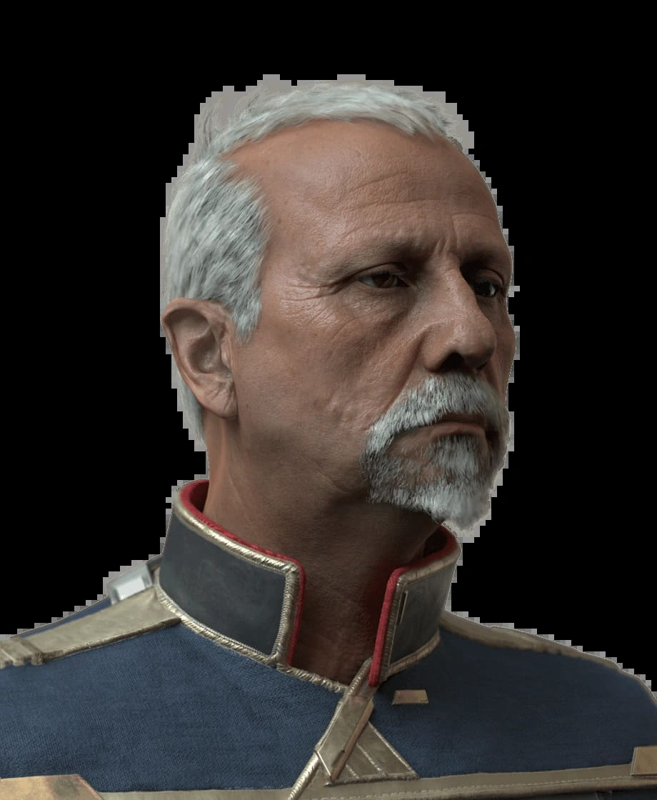
El capitán Mathius era líder de la USG Ishimura durante la expedición en Aegis VII.
Inicialmente intenta mantener el orden dentro de la nave, pero la situación rápidamente se sale de control debido a la influencia del Marker.
Su muerte marca uno de los primeros momentos donde la tripulación comprende que la Ishimura está condenada.
Kendra Daniels
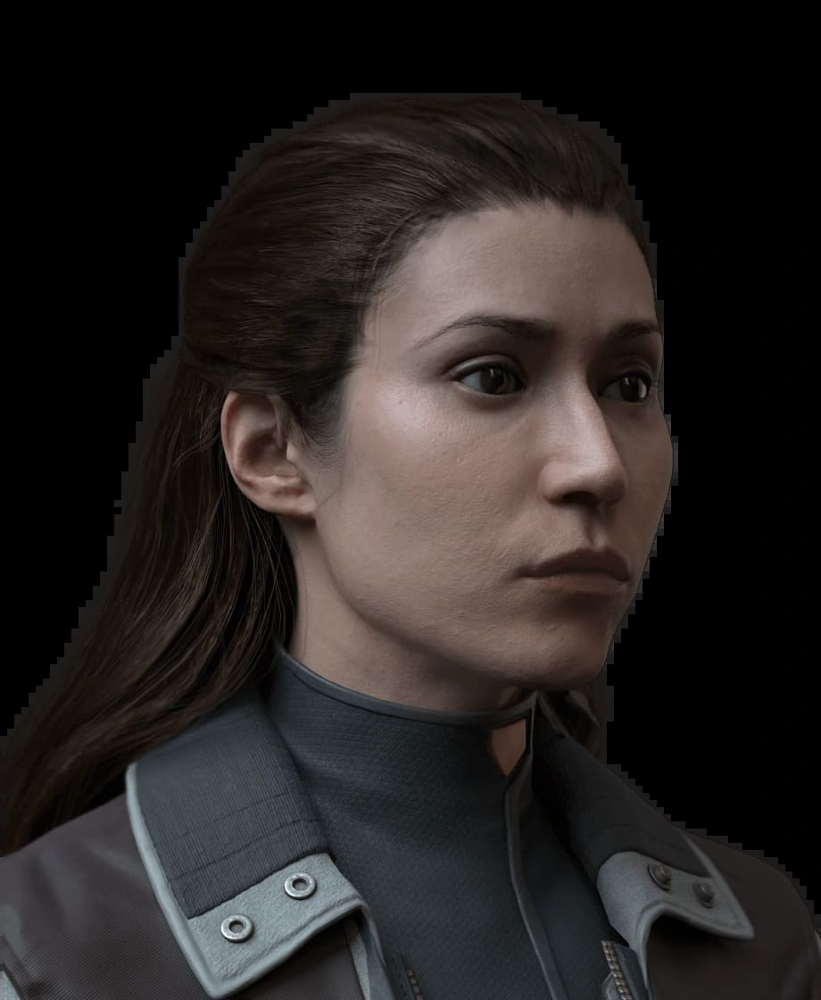
Kendra Daniels aparenta ser simplemente otra superviviente dentro de la Ishimura, pero más adelante se revela que trabaja secretamente para EarthGov.
Su verdadera misión era recuperar información relacionada con el Marker.
Aunque ayuda a Isaac en distintos momentos, constantemente oculta información importante.
Zach Hammond
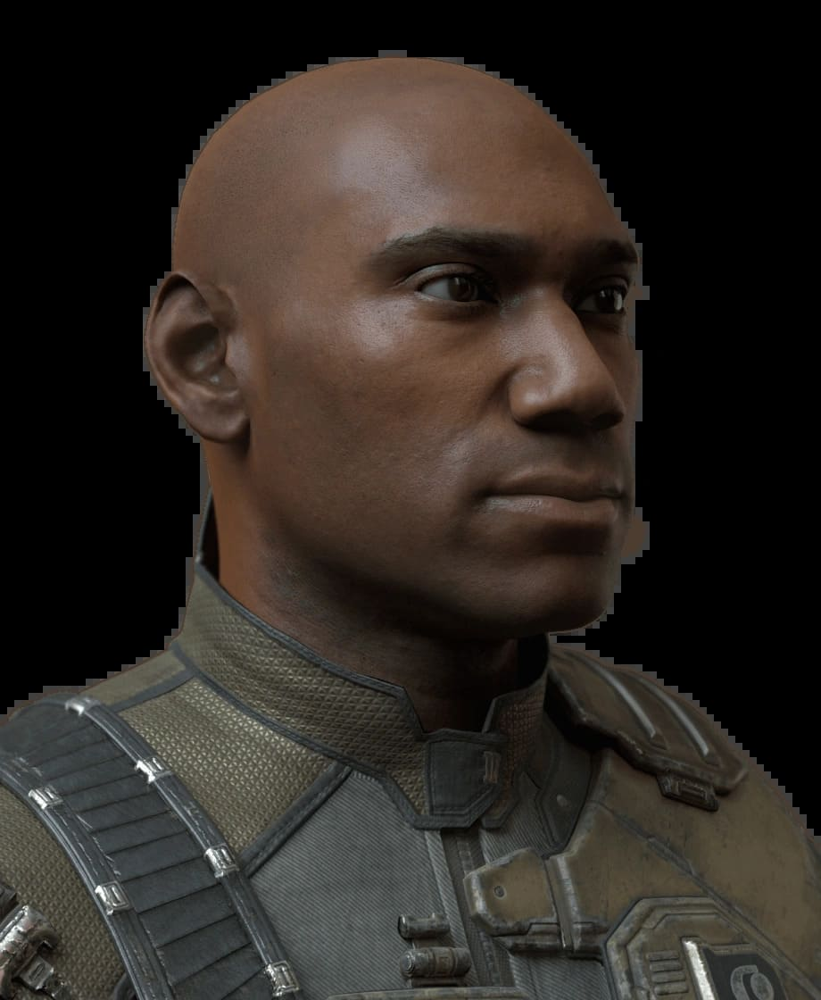
Hammond es el jefe de seguridad que acompaña a Isaac al inicio de Dead Space.
Intenta mantener unido al grupo mientras la situación empeora dentro de la Ishimura.
Su liderazgo y experiencia ayudan temporalmente a los supervivientes, aunque finalmente también termina siendo víctima del desastre.
Los Necromorfos
Los necromorfos son las principales criaturas de la saga Dead Space.
Se crean cuando los cadáveres son reanimados y mutados por la señal emitida por los Markers.
Cada necromorfo representa una deformación grotesca del cuerpo humano, mezclando horror biológico con mutaciones extremas.
La infección necromorfa no solamente mata personas: transforma completamente su anatomía para convertirlas en máquinas de violencia.
Slasher
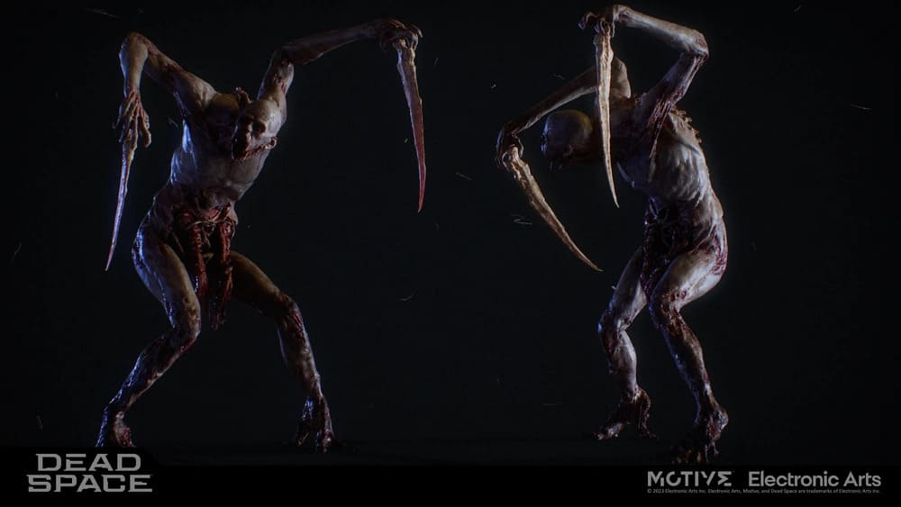
Los Slashers son los necromorfos más comunes.
Poseen cuchillas óseas gigantes en lugar de brazos y atacan violentamente a corta distancia.
Representan la forma básica de infección humana dentro de la saga.
Brute
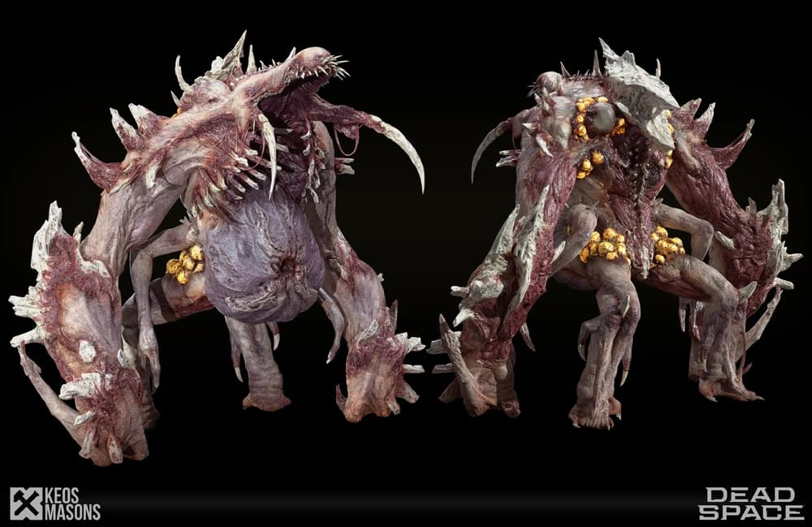
Los Brutes son enormes necromorfos blindados extremadamente resistentes.
Su tamaño y fuerza los convierten en algunos de los enemigos más peligrosos de toda la saga.
Hunter
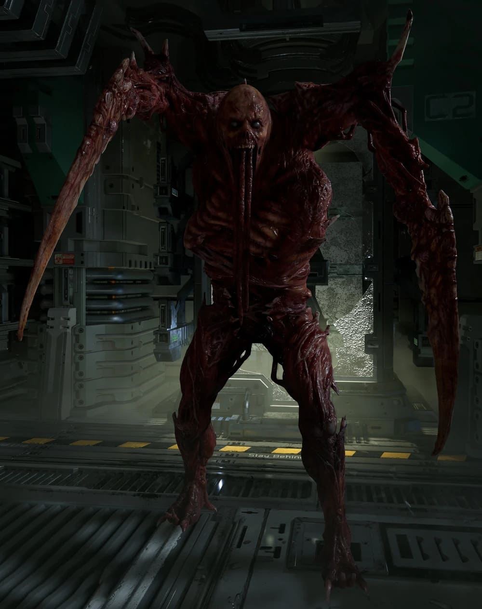
El Hunter es uno de los necromorfos más aterradores del primer juego.
Fue creado artificialmente mediante experimentos realizados por el doctor Mercer.
Tiene la capacidad de regenerarse constantemente, haciendo prácticamente imposible destruirlo de forma normal.
Pregnant
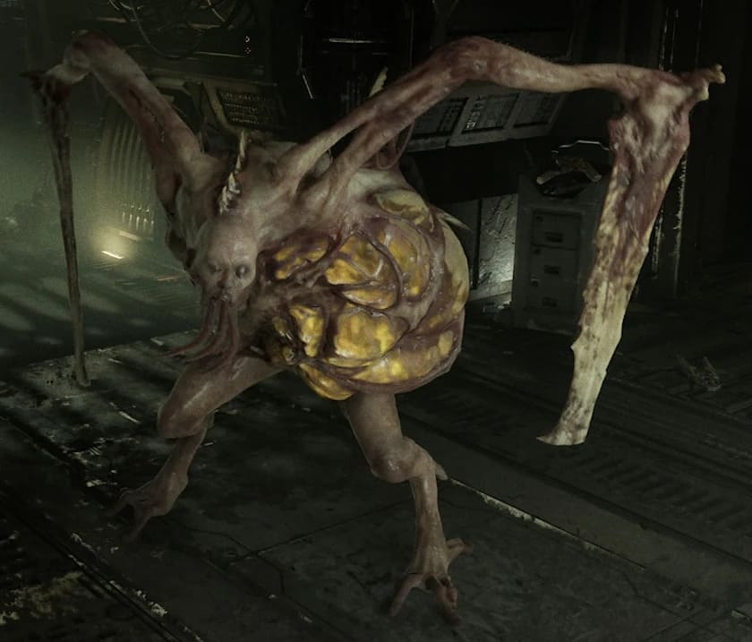
Los Pregnant son necromorfos extremadamente perturbadores que transportan pequeñas criaturas infecciosas dentro de su cuerpo.
Si explotan incorrectamente liberan múltiples enemigos pequeños.
The Pack
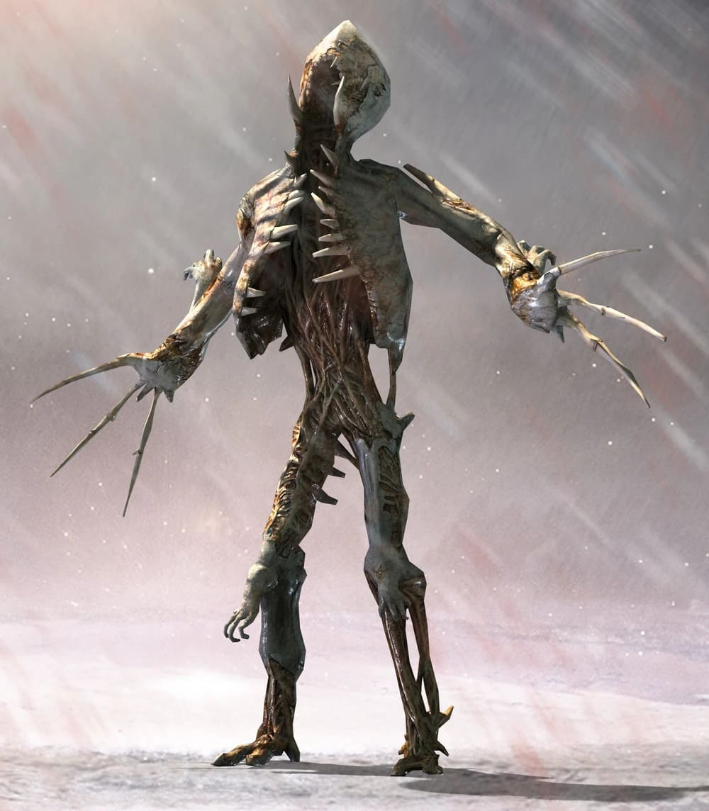
The Pack está formado por niños transformados en necromorfos.
Atacan en grupos numerosos y rápidos, generando algunos de los momentos más incómodos y perturbadores de toda la saga.
Tormentor
El Tormentor es una gigantesca criatura que aparece en Dead Space 2.
Persigue a Isaac por distintas áreas de The Sprawl y demuestra cómo la infección puede crear monstruos cada vez más enormes.
The Ubermorph
El Ubermorph aparece en Dead Space 2 como una evolución todavía más peligrosa del Hunter.
Posee regeneración constante y una resistencia brutal.
The Nexus
El Nexus es una monstruosidad gigantesca formada por múltiples cuerpos humanos fusionados.
Representa perfectamente el horror biológico extremo de la saga.
The Hive Mind
La Hive Mind es la enorme inteligencia necromorfa que controla a las criaturas presentes en Aegis VII.
Funciona como el antagonista final del primer Dead Space.
Brethren Moons
Las Brethren Moons son las entidades más aterradoras de toda la saga.
Se trata de organismos cósmicos gigantescos creados mediante eventos de Convergencia donde civilizaciones enteras son absorbidas y transformadas.
Estas entidades existen desde muchísimo antes que la humanidad y representan la verdadera amenaza detrás de los Markers.
Su sola existencia convierte la historia de Dead Space en horror cósmico puro.